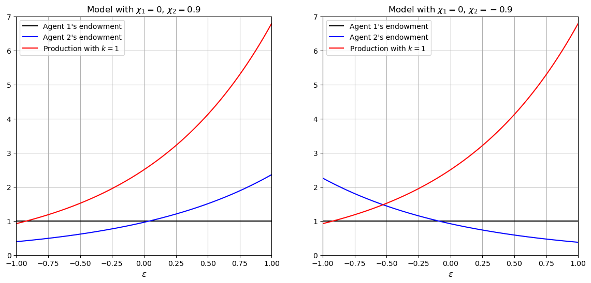
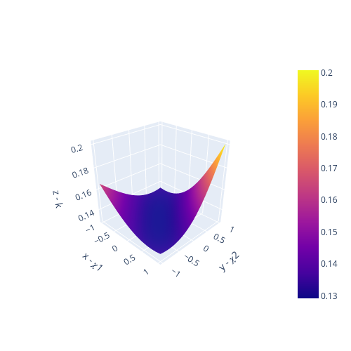

<!DOCTYPE html>


<html lang="en" data-content_root="" >

  <head>
    <meta charset="utf-8" />
    <meta name="viewport" content="width=device-width, initial-scale=1.0" /><meta name="generator" content="Docutils 0.17.1: http://docutils.sourceforge.net/" />

    <title>37. Irrelevance of Capital Structures with Complete Markets &#8212; Advanced Quantitative Economics with Python</title>
    <script src="https://unpkg.com/@popperjs/core@2.9.2/dist/umd/popper.min.js"></script>
    <script src="https://unpkg.com/tippy.js@6.3.1/dist/tippy-bundle.umd.js"></script>
    <script src="https://cdn.jsdelivr.net/npm/feather-icons/dist/feather.min.js"></script>
    
        <script>
            MathJax = {
            loader: {load: ['[tex]/boldsymbol', '[tex]/textmacros']},
            tex: {
                packages: {'[+]': ['boldsymbol', 'textmacros']},
                inlineMath: [['$', '$'], ['\\(', '\\)']],
                processEscapes: true,
                macros: {
                    "argmax" : "arg\\,max",
                    "argmin" : "arg\\,min",
                    "col"    : "col",
                    "Span"   :  "span",
                    "epsilon": "\\varepsilon",
                    "EE": "\\mathbb{E}",
                    "PP": "\\mathbb{P}",
                    "RR": "\\mathbb{R}",
                    "NN": "\\mathbb{N}",
                    "ZZ": "\\mathbb{Z}",
                    "aA": "\\mathcal{A}",
                    "bB": "\\mathcal{B}",
                    "cC": "\\mathcal{C}",
                    "dD": "\\mathcal{D}",
                    "eE": "\\mathcal{E}",
                    "fF": "\\mathcal{F}",
                    "gG": "\\mathcal{G}",
                    "hH": "\\mathcal{H}",
                }
            },
            svg: {
                fontCache: 'global',
                scale: 0.92,
                displayAlign: "center",
            },
            };
        </script>
    
    
  
  
  
  <script data-cfasync="false">
    document.documentElement.dataset.mode = localStorage.getItem("mode") || "";
    document.documentElement.dataset.theme = localStorage.getItem("theme") || "light";
  </script>
  
  <!-- Loaded before other Sphinx assets -->
  <link href="_static/styles/theme.css?digest=bd9e20870c6007c4c509" rel="stylesheet" />
<link href="_static/styles/bootstrap.css?digest=bd9e20870c6007c4c509" rel="stylesheet" />
<link href="_static/styles/pydata-sphinx-theme.css?digest=bd9e20870c6007c4c509" rel="stylesheet" />

  
  <link href="_static/vendor/fontawesome/6.5.1/css/all.min.css?digest=bd9e20870c6007c4c509" rel="stylesheet" />
  <link rel="preload" as="font" type="font/woff2" crossorigin href="_static/vendor/fontawesome/6.5.1/webfonts/fa-solid-900.woff2" />
<link rel="preload" as="font" type="font/woff2" crossorigin href="_static/vendor/fontawesome/6.5.1/webfonts/fa-brands-400.woff2" />
<link rel="preload" as="font" type="font/woff2" crossorigin href="_static/vendor/fontawesome/6.5.1/webfonts/fa-regular-400.woff2" />

    <link rel="stylesheet" type="text/css" href="_static/pygments.css" />
    <link rel="stylesheet" href="_static/styles/quantecon-book-theme.css?digest=b09b2da44b9015b4fa76ea072fa2d8f7faee5492" type="text/css" />
    <link rel="stylesheet" type="text/css" href="_static/togglebutton.css" />
    <link rel="stylesheet" type="text/css" href="_static/copybutton.css" />
    <link rel="stylesheet" type="text/css" href="_static/mystnb.4510f1fc1dee50b3e5859aac5469c37c29e427902b24a333a5f9fcb2f0b3ac41.css" />
    <link rel="stylesheet" type="text/css" href="_static/sphinx-thebe.css" />
    <link rel="stylesheet" type="text/css" href="_static/exercise.css" />
    <link rel="stylesheet" type="text/css" href="_static/design-style.4045f2051d55cab465a707391d5b2007.min.css" />
  
  <!-- Pre-loaded scripts that we'll load fully later -->
  <link rel="preload" as="script" href="_static/scripts/bootstrap.js?digest=bd9e20870c6007c4c509" />
<link rel="preload" as="script" href="_static/scripts/pydata-sphinx-theme.js?digest=bd9e20870c6007c4c509" />
  <script src="_static/vendor/fontawesome/6.5.1/js/all.min.js?digest=bd9e20870c6007c4c509"></script>


    <script data-url_root="./" id="documentation_options" src="_static/documentation_options.js"></script>
    <script src="_static/jquery.js"></script>
    <script src="_static/underscore.js"></script>
    <script src="_static/_sphinx_javascript_frameworks_compat.js"></script>
    <script src="_static/doctools.js"></script>
    <script src="_static/clipboard.min.js"></script>
    <script src="_static/copybutton.js"></script>
    <script src="_static/scripts/sphinx-book-theme.js?digest=5a5c038af52cf7bc1a1ec88eea08e6366ee68824"></script>
    <script>let toggleHintShow = 'Click to show';</script>
    <script>let toggleHintHide = 'Click to hide';</script>
    <script>let toggleOpenOnPrint = 'true';</script>
    <script src="_static/togglebutton.js"></script>
    <script src="_static/scripts/quantecon-book-theme.js?digest=eed9c059a3ee152aae2353ec732f0a6d12e6aa07"></script>
    <script>var togglebuttonSelector = '.toggle, .admonition.dropdown';</script>
    <script src="_static/design-tabs.js"></script>
    <script async="async" src="https://www.googletagmanager.com/gtag/js?id=G-KZLV7PM9LL"></script>
    <script>
                window.dataLayer = window.dataLayer || [];
                function gtag(){ dataLayer.push(arguments); }
                gtag('js', new Date());
                gtag('config', 'G-KZLV7PM9LL');
            </script>
    <script>const THEBE_JS_URL = "https://unpkg.com/thebe@0.8.2/lib/index.js"
const thebe_selector = ".thebe,.cell"
const thebe_selector_input = "pre"
const thebe_selector_output = ".output, .cell_output"
</script>
    <script async="async" src="_static/sphinx-thebe.js"></script>
    <script>window.MathJax = {"tex": {"macros": {"argmax": "arg\\,max", "argmin": "arg\\,min", "col": "col", "Span": "span", "epsilon": "\\varepsilon", "EE": "\\mathbb{E}", "PP": "\\mathbb{P}", "RR": "\\mathbb{R}", "NN": "\\mathbb{N}", "ZZ": "\\mathbb{Z}", "aA": "\\mathcal{A}", "bB": "\\mathcal{B}", "cC": "\\mathcal{C}", "dD": "\\mathcal{D}", "eE": "\\mathcal{E}", "fF": "\\mathcal{F}", "gG": "\\mathcal{G}", "hH": "\\mathcal{H}"}}, "options": {"processHtmlClass": "tex2jax_process|mathjax_process|math|output_area"}}</script>
    <script defer="defer" src="https://cdn.jsdelivr.net/npm/mathjax@3/es5/tex-mml-chtml.js"></script>
    <script>DOCUMENTATION_OPTIONS.pagename = 'BCG_complete_mkts';</script>
    <link rel="canonical" href="https://python-advanced.quantecon.org/BCG_complete_mkts.html" />
    <link rel="shortcut icon" href="_static/lectures-favicon.ico"/>
    <link rel="index" title="Index" href="genindex.html" />
    <link rel="search" title="Search" href="search.html" />
    <link rel="next" title="38. Equilibrium Capital Structures with Incomplete Markets" href="BCG_incomplete_mkts.html" />
    <link rel="prev" title="36. Two Modifications of Mean-Variance Portfolio Theory" href="black_litterman.html" />

<!-- Normal Meta Tags -->
<meta name="author" context="Thomas J. Sargent &amp; John Stachurski" />
<meta name="keywords" content="Python, QuantEcon, Quantitative Economics, Economics, Sloan, Alfred P. Sloan Foundation, Tom J. Sargent, John Stachurski" />
<meta name="description" content=This website presents a set of lectures on advanced quantitative economic modeling, designed and written by Thomas J. Sargent and John Stachurski. />

<!-- Twitter tags -->
<meta name="twitter:card" content="summary" />
<meta name="twitter:site" content="@quantecon" />
<meta name="twitter:title" content="Irrelevance of Capital Structures with Complete Markets"/>
<meta name="twitter:description" content="This website presents a set of lectures on advanced quantitative economic modeling, designed and written by Thomas J. Sargent and John Stachurski.">
<meta name="twitter:creator" content="@quantecon">
<meta name="twitter:image" content="https://assets.quantecon.org/img/qe-twitter-logo.png">

<!-- Opengraph tags -->
<meta property="og:title" content="Irrelevance of Capital Structures with Complete Markets" />
<meta property="og:type" content="website" />
<meta property="og:url" content="https://python-advanced.quantecon.org/BCG_complete_mkts.html" />
<meta property="og:image" content="https://assets.quantecon.org/img/qe-og-logo.png" />
<meta property="og:description" content="This website presents a set of lectures on advanced quantitative economic modeling, designed and written by Thomas J. Sargent and John Stachurski." />
<meta property="og:site_name" content="Advanced Quantitative Economics with Python" />
<meta name="theme-color" content="#ffffff" />

  </head>
<body>


    <span id="top"></span>

    <div class="qe-wrapper">

        <div class="qe-main">

            <div class="qe-page" id=BCG_complete_mkts>

                <div class="qe-page__toc">

                    <div class="inner">

                        
                        <div class="qe-page__toc-header">
                            On this page
                        </div>


                        <nav id="bd-toc-nav" class="qe-page__toc-nav">
                            <ul class="visible nav section-nav flex-column">
<li class="toc-h2 nav-item toc-entry"><a class="reference internal nav-link" href="#introduction">37.1. Introduction</a><ul class="nav section-nav flex-column">
<li class="toc-h3 nav-item toc-entry"><a class="reference internal nav-link" href="#setup">37.1.1. Setup</a></li>
<li class="toc-h3 nav-item toc-entry"><a class="reference internal nav-link" href="#endowments">37.1.2. Endowments</a></li>
<li class="toc-h3 nav-item toc-entry"><a class="reference internal nav-link" href="#technology">37.1.3. Technology:</a></li>
<li class="toc-h3 nav-item toc-entry"><a class="reference internal nav-link" href="#preferences">37.1.4. Preferences:</a></li>
<li class="toc-h3 nav-item toc-entry"><a class="reference internal nav-link" href="#parameterizations">37.1.5. Parameterizations</a></li>
<li class="toc-h3 nav-item toc-entry"><a class="reference internal nav-link" href="#pareto-criterion-and-planning-problem">37.1.6. Pareto criterion and planning problem</a></li>
<li class="toc-h3 nav-item toc-entry"><a class="reference internal nav-link" href="#helpful-observations-and-bookkeeping">37.1.7. Helpful observations and bookkeeping</a><ul class="nav section-nav flex-column">
<li class="toc-h4 nav-item toc-entry"><a class="reference internal nav-link" href="#remarks">37.1.7.1. Remarks</a></li>
</ul>
</li>
</ul>
</li>
<li class="toc-h2 nav-item toc-entry"><a class="reference internal nav-link" href="#competitive-equilibrium">37.2. Competitive equilibrium</a><ul class="nav section-nav flex-column">
<li class="toc-h3 nav-item toc-entry"><a class="reference internal nav-link" href="#measures-of-agents-and-firms">37.2.1. Measures of agents and firms</a><ul class="nav section-nav flex-column">
<li class="toc-h4 nav-item toc-entry"><a class="reference internal nav-link" href="#ownership">37.2.1.1. Ownership</a></li>
<li class="toc-h4 nav-item toc-entry"><a class="reference internal nav-link" href="#asset-markets">37.2.1.2. Asset markets</a></li>
</ul>
</li>
<li class="toc-h3 nav-item toc-entry"><a class="reference internal nav-link" href="#objects-appearing-in-a-competitive-equilibrium">37.2.2. Objects appearing in a competitive equilibrium</a></li>
<li class="toc-h3 nav-item toc-entry"><a class="reference internal nav-link" href="#a-representative-firms-problem">37.2.3. A representative firm’s problem</a></li>
<li class="toc-h3 nav-item toc-entry"><a class="reference internal nav-link" href="#a-consumers-problem">37.2.4. A consumer’s problem</a></li>
<li class="toc-h3 nav-item toc-entry"><a class="reference internal nav-link" href="#computing-competitive-equilibrium-prices-and-quantities">37.2.5. Computing competitive equilibrium prices and quantities</a></li>
<li class="toc-h3 nav-item toc-entry"><a class="reference internal nav-link" href="#modigliani-miller-theorem">37.2.6. Modigliani-Miller theorem</a></li>
</ul>
</li>
<li class="toc-h2 nav-item toc-entry"><a class="reference internal nav-link" href="#code">37.3. Code</a><ul class="nav section-nav flex-column">
<li class="toc-h3 nav-item toc-entry"><a class="reference internal nav-link" href="#examples">37.3.1. Examples</a><ul class="nav section-nav flex-column">
<li class="toc-h4 nav-item toc-entry"><a class="reference internal nav-link" href="#st-example">37.3.1.1. 1st example</a></li>
<li class="toc-h4 nav-item toc-entry"><a class="reference internal nav-link" href="#nd-example">37.3.1.2. 2nd example</a></li>
</ul>
</li>
</ul>
</li>
</ul>
                            <p class="logo">
                                
                                    
                                    <a href=https://quantecon.org></a>
                                    
                                    
                                
                            </p>

                            <p class="powered">Powered by <a href="https://jupyterbook.org/">Jupyter Book</a></p>

                        </nav>

                        <div class="qe-page__toc-footer">
                            
                            
                            <p><a href="#top"><strong>Back to top</strong></a></p>
                        </div>

                    </div>

                </div>

                <div class="qe-page__header">

                    <div class="qe-page__header-copy">

                        <p class="qe-page__header-heading"><a href="intro.html">Advanced Quantitative Economics with Python</a></p>

                        <p class="qe-page__header-subheading">Irrelevance of Capital Structures with Complete Markets</p>

                    </div>
                    <!-- length 2, since its a string and empty dict has length 2 - {} -->
                        <p class="qe-page__header-authors" font-size="18">
                            
                                
                                    <a href="http://www.tomsargent.com/" target="_blank"><span>Thomas J. Sargent</span></a>
                                
                            
                                
                                    and <a href="https://johnstachurski.net/" target="_blank"><span>John Stachurski</span></a>
                                
                            
                        </p>


                </div> <!-- .page__header -->


                
                <main class="qe-page__content" role="main">
                    
                    <div>
                        
  <div id="qe-notebook-header" align="right" style="text-align:right;">
        <a href="https://quantecon.org/" title="quantecon.org">
                
        </a>
</div><section class="tex2jax_ignore mathjax_ignore" id="irrelevance-of-capital-structures-with-complete-markets">
<h1><a class="toc-backref" href="#id4"><span class="section-number">37. </span>Irrelevance of Capital Structures with Complete Markets</a><a class="headerlink" href="#irrelevance-of-capital-structures-with-complete-markets" title="Permalink to this heading">#</a></h1>
<div class="contents topic" id="contents">
<p class="topic-title">Contents</p>
<ul class="simple">
<li><p><a class="reference internal" href="#irrelevance-of-capital-structures-with-complete-markets" id="id4">Irrelevance of Capital Structures with Complete Markets</a></p>
<ul>
<li><p><a class="reference internal" href="#introduction" id="id5">Introduction</a></p></li>
<li><p><a class="reference internal" href="#competitive-equilibrium" id="id6">Competitive equilibrium</a></p></li>
<li><p><a class="reference internal" href="#code" id="id7">Code</a></p></li>
</ul>
</li>
</ul>
</div>
<p>In addition to what’s in Anaconda, this lecture will need the following libraries:</p>
<div class="cell tag_hide-output docutils container">
<div class="cell_input above-output-prompt docutils container">
<div class="highlight-ipython3 notranslate"><div class="highlight"><pre><span></span><span class="o">!</span>pip<span class="w"> </span>install<span class="w"> </span>--upgrade<span class="w"> </span>quantecon
<span class="o">!</span>pip<span class="w"> </span>install<span class="w"> </span>interpolation
<span class="o">!</span>conda<span class="w"> </span>install<span class="w"> </span>-y<span class="w"> </span>-c<span class="w"> </span>plotly<span class="w"> </span>plotly<span class="w"> </span>plotly-orca
</pre></div>
</div>
</div>
<details class="hide below-input">
<summary aria-label="Toggle hidden content">
<span class="collapsed">Show code cell output</span>
<span class="expanded">Hide code cell output</span>
</summary>
<div class="cell_output docutils container">
<div class="output stream highlight-myst-ansi notranslate"><div class="highlight"><pre><span></span>Collecting quantecon
  Obtaining dependency information for quantecon from https://files.pythonhosted.org/packages/33/ea/e64e1be90daf370f5b190ceb298b9ac92105b3672775dce77acde8ccf603/quantecon-0.7.1-py3-none-any.whl.metadata
</pre></div>
</div>
<div class="output stream highlight-myst-ansi notranslate"><div class="highlight"><pre><span></span>  Downloading quantecon-0.7.1-py3-none-any.whl.metadata (4.0 kB)
Requirement already satisfied: numba&gt;=0.49.0 in /usr/share/miniconda3/envs/quantecon/lib/python3.11/site-packages (from quantecon) (0.57.1)
Requirement already satisfied: numpy&gt;=1.17.0 in /usr/share/miniconda3/envs/quantecon/lib/python3.11/site-packages (from quantecon) (1.24.3)
Requirement already satisfied: requests in /usr/share/miniconda3/envs/quantecon/lib/python3.11/site-packages (from quantecon) (2.31.0)
Requirement already satisfied: scipy&gt;=1.5.0 in /usr/share/miniconda3/envs/quantecon/lib/python3.11/site-packages (from quantecon) (1.11.1)
Requirement already satisfied: sympy in /usr/share/miniconda3/envs/quantecon/lib/python3.11/site-packages (from quantecon) (1.11.1)
Requirement already satisfied: llvmlite&lt;0.41,&gt;=0.40.0dev0 in /usr/share/miniconda3/envs/quantecon/lib/python3.11/site-packages (from numba&gt;=0.49.0-&gt;quantecon) (0.40.0)
</pre></div>
</div>
<div class="output stream highlight-myst-ansi notranslate"><div class="highlight"><pre><span></span>Requirement already satisfied: charset-normalizer&lt;4,&gt;=2 in /usr/share/miniconda3/envs/quantecon/lib/python3.11/site-packages (from requests-&gt;quantecon) (2.0.4)
Requirement already satisfied: idna&lt;4,&gt;=2.5 in /usr/share/miniconda3/envs/quantecon/lib/python3.11/site-packages (from requests-&gt;quantecon) (3.4)
Requirement already satisfied: urllib3&lt;3,&gt;=1.21.1 in /usr/share/miniconda3/envs/quantecon/lib/python3.11/site-packages (from requests-&gt;quantecon) (1.26.16)
Requirement already satisfied: certifi&gt;=2017.4.17 in /usr/share/miniconda3/envs/quantecon/lib/python3.11/site-packages (from requests-&gt;quantecon) (2023.7.22)
Requirement already satisfied: mpmath&gt;=0.19 in /usr/share/miniconda3/envs/quantecon/lib/python3.11/site-packages (from sympy-&gt;quantecon) (1.3.0)
Downloading quantecon-0.7.1-py3-none-any.whl (214 kB)
?25l   ━━━━━━━━━━━━━━━━━━━━━━━━━━━━━━━━━━━━━━━━ <span class=" -Color -Color-Green">0.0/214.8 kB</span> <span class=" -Color -Color-Red">?</span> eta <span class=" -Color -Color-Cyan">-:--:--</span>
</pre></div>
</div>
<div class="output stream highlight-myst-ansi notranslate"><div class="highlight"><pre><span></span>   ━━━━━━━━━━━━━━━━━━━━━━━━━━━━━━━━━━━━━━━━ <span class=" -Color -Color-Green">214.8/214.8 kB</span> <span class=" -Color -Color-Red">11.6 MB/s</span> eta <span class=" -Color -Color-Cyan">0:00:00</span>
?25h
</pre></div>
</div>
<div class="output stream highlight-myst-ansi notranslate"><div class="highlight"><pre><span></span>Installing collected packages: quantecon
</pre></div>
</div>
<div class="output stream highlight-myst-ansi notranslate"><div class="highlight"><pre><span></span>Successfully installed quantecon-0.7.1
</pre></div>
</div>
<div class="output stream highlight-myst-ansi notranslate"><div class="highlight"><pre><span></span>Collecting interpolation
</pre></div>
</div>
<div class="output stream highlight-myst-ansi notranslate"><div class="highlight"><pre><span></span>  Downloading interpolation-2.2.1-py3-none-any.whl (56 kB)
?25l     ━━━━━━━━━━━━━━━━━━━━━━━━━━━━━━━━━━━━━━━━ <span class=" -Color -Color-Green">0.0/56.6 kB</span> <span class=" -Color -Color-Red">?</span> eta <span class=" -Color -Color-Cyan">-:--:--</span>
     ━━━━━━━━━━━━━━━━━━━━━━━━━━━━━━━━━━━━━━━━ <span class=" -Color -Color-Green">56.6/56.6 kB</span> <span class=" -Color -Color-Red">5.3 MB/s</span> eta <span class=" -Color -Color-Cyan">0:00:00</span>
?25hRequirement already satisfied: numba&gt;=0.47 in /usr/share/miniconda3/envs/quantecon/lib/python3.11/site-packages (from interpolation) (0.57.1)
Requirement already satisfied: numpy&gt;=1.18.1 in /usr/share/miniconda3/envs/quantecon/lib/python3.11/site-packages (from interpolation) (1.24.3)
Requirement already satisfied: scipy&gt;=1.4.1 in /usr/share/miniconda3/envs/quantecon/lib/python3.11/site-packages (from interpolation) (1.11.1)
Collecting tempita&gt;=0.5.2 (from interpolation)
</pre></div>
</div>
<div class="output stream highlight-myst-ansi notranslate"><div class="highlight"><pre><span></span>  Downloading Tempita-0.5.2-py3-none-any.whl (12 kB)
Requirement already satisfied: llvmlite&lt;0.41,&gt;=0.40.0dev0 in /usr/share/miniconda3/envs/quantecon/lib/python3.11/site-packages (from numba&gt;=0.47-&gt;interpolation) (0.40.0)
</pre></div>
</div>
<div class="output stream highlight-myst-ansi notranslate"><div class="highlight"><pre><span></span>Installing collected packages: tempita, interpolation
</pre></div>
</div>
<div class="output stream highlight-myst-ansi notranslate"><div class="highlight"><pre><span></span>Successfully installed interpolation-2.2.1 tempita-0.5.2
</pre></div>
</div>
<div class="output stream highlight-myst-ansi notranslate"><div class="highlight"><pre><span></span>Channels:
 - plotly
 - default
 - defaults
Platform: linux-64
Collecting package metadata (repodata.json): - 
</pre></div>
</div>
<div class="output stream highlight-myst-ansi notranslate"><div class="highlight"><pre><span></span>\ 
</pre></div>
</div>
<div class="output stream highlight-myst-ansi notranslate"><div class="highlight"><pre><span></span>| 
</pre></div>
</div>
<div class="output stream highlight-myst-ansi notranslate"><div class="highlight"><pre><span></span>/ 
</pre></div>
</div>
<div class="output stream highlight-myst-ansi notranslate"><div class="highlight"><pre><span></span>- 
</pre></div>
</div>
<div class="output stream highlight-myst-ansi notranslate"><div class="highlight"><pre><span></span>\ 
</pre></div>
</div>
<div class="output stream highlight-myst-ansi notranslate"><div class="highlight"><pre><span></span>| 
</pre></div>
</div>
<div class="output stream highlight-myst-ansi notranslate"><div class="highlight"><pre><span></span>/ 
</pre></div>
</div>
<div class="output stream highlight-myst-ansi notranslate"><div class="highlight"><pre><span></span>- 
</pre></div>
</div>
<div class="output stream highlight-myst-ansi notranslate"><div class="highlight"><pre><span></span>\ 
</pre></div>
</div>
<div class="output stream highlight-myst-ansi notranslate"><div class="highlight"><pre><span></span>| 
</pre></div>
</div>
<div class="output stream highlight-myst-ansi notranslate"><div class="highlight"><pre><span></span>/ 
</pre></div>
</div>
<div class="output stream highlight-myst-ansi notranslate"><div class="highlight"><pre><span></span>- 
</pre></div>
</div>
<div class="output stream highlight-myst-ansi notranslate"><div class="highlight"><pre><span></span>\ 
</pre></div>
</div>
<div class="output stream highlight-myst-ansi notranslate"><div class="highlight"><pre><span></span>| 
</pre></div>
</div>
<div class="output stream highlight-myst-ansi notranslate"><div class="highlight"><pre><span></span>/ 
</pre></div>
</div>
<div class="output stream highlight-myst-ansi notranslate"><div class="highlight"><pre><span></span>- 
</pre></div>
</div>
<div class="output stream highlight-myst-ansi notranslate"><div class="highlight"><pre><span></span>\ 
</pre></div>
</div>
<div class="output stream highlight-myst-ansi notranslate"><div class="highlight"><pre><span></span>| 
</pre></div>
</div>
<div class="output stream highlight-myst-ansi notranslate"><div class="highlight"><pre><span></span>/ 
</pre></div>
</div>
<div class="output stream highlight-myst-ansi notranslate"><div class="highlight"><pre><span></span>- 
</pre></div>
</div>
<div class="output stream highlight-myst-ansi notranslate"><div class="highlight"><pre><span></span>\ 
</pre></div>
</div>
<div class="output stream highlight-myst-ansi notranslate"><div class="highlight"><pre><span></span>| 
</pre></div>
</div>
<div class="output stream highlight-myst-ansi notranslate"><div class="highlight"><pre><span></span>/ 
</pre></div>
</div>
<div class="output stream highlight-myst-ansi notranslate"><div class="highlight"><pre><span></span>- 
</pre></div>
</div>
<div class="output stream highlight-myst-ansi notranslate"><div class="highlight"><pre><span></span>\ 
</pre></div>
</div>
<div class="output stream highlight-myst-ansi notranslate"><div class="highlight"><pre><span></span>| 
</pre></div>
</div>
<div class="output stream highlight-myst-ansi notranslate"><div class="highlight"><pre><span></span>/ 
</pre></div>
</div>
<div class="output stream highlight-myst-ansi notranslate"><div class="highlight"><pre><span></span>done
Solving environment: \ 
</pre></div>
</div>
<div class="output stream highlight-myst-ansi notranslate"><div class="highlight"><pre><span></span>| 
</pre></div>
</div>
<div class="output stream highlight-myst-ansi notranslate"><div class="highlight"><pre><span></span>/ 
</pre></div>
</div>
<div class="output stream highlight-myst-ansi notranslate"><div class="highlight"><pre><span></span>- 
</pre></div>
</div>
<div class="output stream highlight-myst-ansi notranslate"><div class="highlight"><pre><span></span>\ 
</pre></div>
</div>
<div class="output stream highlight-myst-ansi notranslate"><div class="highlight"><pre><span></span>| 
</pre></div>
</div>
<div class="output stream highlight-myst-ansi notranslate"><div class="highlight"><pre><span></span>/ 
</pre></div>
</div>
<div class="output stream highlight-myst-ansi notranslate"><div class="highlight"><pre><span></span>- 
</pre></div>
</div>
<div class="output stream highlight-myst-ansi notranslate"><div class="highlight"><pre><span></span>\ 
</pre></div>
</div>
<div class="output stream highlight-myst-ansi notranslate"><div class="highlight"><pre><span></span>| 
</pre></div>
</div>
<div class="output stream highlight-myst-ansi notranslate"><div class="highlight"><pre><span></span>/ 
</pre></div>
</div>
<div class="output stream highlight-myst-ansi notranslate"><div class="highlight"><pre><span></span>- 
</pre></div>
</div>
<div class="output stream highlight-myst-ansi notranslate"><div class="highlight"><pre><span></span>\ 
</pre></div>
</div>
<div class="output stream highlight-myst-ansi notranslate"><div class="highlight"><pre><span></span>| 
</pre></div>
</div>
<div class="output stream highlight-myst-ansi notranslate"><div class="highlight"><pre><span></span>/ 
</pre></div>
</div>
<div class="output stream highlight-myst-ansi notranslate"><div class="highlight"><pre><span></span>- 
</pre></div>
</div>
<div class="output stream highlight-myst-ansi notranslate"><div class="highlight"><pre><span></span>\ 
</pre></div>
</div>
<div class="output stream highlight-myst-ansi notranslate"><div class="highlight"><pre><span></span>| 
</pre></div>
</div>
<div class="output stream highlight-myst-ansi notranslate"><div class="highlight"><pre><span></span>done
</pre></div>
</div>
<div class="output stream highlight-myst-ansi notranslate"><div class="highlight"><pre><span></span>## Package Plan ##

  environment location: /usr/share/miniconda3/envs/quantecon

  added / updated specs:
    - plotly
    - plotly-orca


The following packages will be downloaded:

    package                    |            build
    ---------------------------|-----------------
    plotly-orca-1.3.1          |                1        56.6 MB  plotly
    ------------------------------------------------------------
                                           Total:        56.6 MB

The following NEW packages will be INSTALLED:

  plotly-orca        plotly/linux-64::plotly-orca-1.3.1-1 


Downloading and Extracting Packages:
</pre></div>
</div>
<div class="output stream highlight-myst-ansi notranslate"><div class="highlight"><pre><span></span>plotly-orca-1.3.1    | 56.6 MB   |                                       |   0% 
</pre></div>
</div>
<div class="output stream highlight-myst-ansi notranslate"><div class="highlight"><pre><span></span>plotly-orca-1.3.1    | 56.6 MB   | ##################################### | 100% 
plotly-orca-1.3.1    | 56.6 MB   | ##################################### | 100% 
                                                                                


Preparing transaction: - 
</pre></div>
</div>
<div class="output stream highlight-myst-ansi notranslate"><div class="highlight"><pre><span></span>done
Verifying transaction: | 
</pre></div>
</div>
<div class="output stream highlight-myst-ansi notranslate"><div class="highlight"><pre><span></span>/ 
</pre></div>
</div>
<div class="output stream highlight-myst-ansi notranslate"><div class="highlight"><pre><span></span>done
Executing transaction: \ 
</pre></div>
</div>
<div class="output stream highlight-myst-ansi notranslate"><div class="highlight"><pre><span></span>| 
</pre></div>
</div>
<div class="output stream highlight-myst-ansi notranslate"><div class="highlight"><pre><span></span>/ 
</pre></div>
</div>
<div class="output stream highlight-myst-ansi notranslate"><div class="highlight"><pre><span></span>done
</pre></div>
</div>
</div>
</details>
</div>
<section id="introduction">
<h2><a class="toc-backref" href="#id5"><span class="section-number">37.1. </span>Introduction</a><a class="headerlink" href="#introduction" title="Permalink to this heading">#</a></h2>
<p>This is a prolegomenon to another lecture <a class="reference internal" href="BCG_incomplete_mkts.html"><span class="doc">Equilibrium Capital Structures with Incomplete Markets</span></a> about a model with
incomplete markets authored by Bisin, Clementi, and Gottardi <span id="id1">[<a class="reference internal" href="zreferences.html#id29" title="Alberto Bisin, Gian Luca Clementi, and Piero Gottardi. Capital and hedging demand with incomplete markets. Technical Report, NYU and EUI, 2018.">BCG18</a>]</span>.</p>
<p>We adopt specifications of preferences and technologies very close to
Bisin, Clemente, and Gottardi’s  but unlike them  assume that there are complete
markets in one-period Arrow securities.</p>
<p>This simplification of BCG’s setup helps us by</p>
<ul class="simple">
<li><p>creating a benchmark economy to compare with outcomes in BCG’s
incomplete markets economy</p></li>
<li><p>creating a good guess for initial values of some equilibrium objects
to be computed in BCG’s incomplete markets economy via an iterative
algorithm</p></li>
<li><p>illustrating classic complete markets outcomes that include</p>
<ul>
<li><p>indeterminacy of consumers’ portfolio choices</p></li>
<li><p>indeterminacy of firms’ financial structures that underlies a
Modigliani-Miller theorem <span id="id2">[<a class="reference internal" href="zreferences.html#id30" title="Franco Modigliani and Merton H. Miller. Corporation finance and the theory of investment. American Economic Review, XLVIII(3):261-297, 1958.">MM58</a>]</span></p></li>
</ul>
</li>
<li><p>introducing <code class="docutils literal notranslate"><span class="pre">Big</span> <span class="pre">K,</span> <span class="pre">little</span> <span class="pre">k</span></code> issues in a simple context that will
recur in the BCG incomplete markets environment</p></li>
</ul>
<p>A Big K, little k analysis also played roles in <a class="reference external" href="https://python.quantecon.org/cass_koopmans_1.html">this quantecon lecture</a> as well  as
<a class="reference external" href="https://python.quantecon.org/rational_expectations.html">here</a> and <a class="reference internal" href="dyn_stack.html"><span class="doc">here</span></a>.</p>
<section id="setup">
<h3><span class="section-number">37.1.1. </span>Setup<a class="headerlink" href="#setup" title="Permalink to this heading">#</a></h3>
<p>The economy lasts for two periods, <span class="math notranslate nohighlight">\(t=0, 1\)</span>.</p>
<p>There are two types of consumers named <span class="math notranslate nohighlight">\(i=1,2\)</span>.</p>
<p>A scalar random variable <span class="math notranslate nohighlight">\(\epsilon\)</span> with probability density <span class="math notranslate nohighlight">\(g(\epsilon)\)</span> affects both</p>
<ul class="simple">
<li><p>the  return in period <span class="math notranslate nohighlight">\(1\)</span> from investing
<span class="math notranslate nohighlight">\(k \geq 0\)</span> in physical capital in period <span class="math notranslate nohighlight">\(0\)</span>.</p></li>
<li><p>exogenous period <span class="math notranslate nohighlight">\(1\)</span> endowments of the consumption good for
agents of types <span class="math notranslate nohighlight">\(i =1\)</span> and <span class="math notranslate nohighlight">\(i=2\)</span>.</p></li>
</ul>
<p>Type <span class="math notranslate nohighlight">\(i=1\)</span> and <span class="math notranslate nohighlight">\(i=2\)</span> agents’ period <span class="math notranslate nohighlight">\(1\)</span> endowments are
correlated with the  return on physical capital in different ways.</p>
<p>We discuss two arrangements:</p>
<ul class="simple">
<li><p>a command economy in which a benevolent planner chooses <span class="math notranslate nohighlight">\(k\)</span> and
allocates goods to the two types of  consumers in each period and each random
second period state</p></li>
<li><p>a competitive equilibrium with markets in claims on physical capital
and a complete set (possibly a continuum) of one-period Arrow
securities that pay period <span class="math notranslate nohighlight">\(1\)</span> consumption goods contingent on
the realization of random variable <span class="math notranslate nohighlight">\(\epsilon\)</span>.</p></li>
</ul>
</section>
<section id="endowments">
<h3><span class="section-number">37.1.2. </span>Endowments<a class="headerlink" href="#endowments" title="Permalink to this heading">#</a></h3>
<p>There is a single consumption good in period <span class="math notranslate nohighlight">\(0\)</span> and at each
random state <span class="math notranslate nohighlight">\(\epsilon\)</span> in period <span class="math notranslate nohighlight">\(1\)</span>.</p>
<p>Economy-wide endowments in periods <span class="math notranslate nohighlight">\(0\)</span> and <span class="math notranslate nohighlight">\(1\)</span> are</p>
<div class="math notranslate nohighlight">
\[
\begin{aligned}
w_0 &amp; \cr
w_1(\epsilon) &amp;  \textrm{ in state }\epsilon
\end{aligned}
\]</div>
<p>Soon we’ll explain how aggregate endowments are divided between
type <span class="math notranslate nohighlight">\(i=1\)</span> and type <span class="math notranslate nohighlight">\(i=2\)</span> consumers.</p>
<p>We don’t need to do that in order to describe a social planning problem.</p>
</section>
<section id="technology">
<h3><span class="section-number">37.1.3. </span>Technology:<a class="headerlink" href="#technology" title="Permalink to this heading">#</a></h3>
<p>Where <span class="math notranslate nohighlight">\(\alpha \in (0,1)\)</span> and <span class="math notranslate nohighlight">\(A &gt;0\)</span></p>
<div class="math notranslate nohighlight">
\[
\begin{aligned}
 c_0^1 + c_0^2 + k &amp; = w_0^1 + w_0^2  \cr
 c_1^1(\epsilon) + c_1^2(\epsilon) &amp; =  w_1^1(\epsilon) + w_1^2(\epsilon) + e^\epsilon A k^\alpha, \quad k \geq 0
\end{aligned}
\]</div>
</section>
<section id="preferences">
<h3><span class="section-number">37.1.4. </span>Preferences:<a class="headerlink" href="#preferences" title="Permalink to this heading">#</a></h3>
<p>A consumer of type <span class="math notranslate nohighlight">\(i\)</span> orders period <span class="math notranslate nohighlight">\(0\)</span> consumption
<span class="math notranslate nohighlight">\(c_0^i\)</span> and state <span class="math notranslate nohighlight">\(\epsilon\)</span>, period <span class="math notranslate nohighlight">\(1\)</span> consumption
<span class="math notranslate nohighlight">\(c^i_1(\epsilon)\)</span> by</p>
<div class="math notranslate nohighlight">
\[
u^i = u(c_0^i) + \beta \int u(c_1^i(\epsilon)) g (\epsilon) d \epsilon, \quad i = 1,2
\]</div>
<p><span class="math notranslate nohighlight">\(\beta \in (0,1)\)</span> and the one-period utility function is</p>
<div class="math notranslate nohighlight">
\[\begin{split}
u(c) = \begin{cases}
\frac{c^{1 -\gamma}} { 1 - \gamma} &amp; \textrm{if  } \gamma \neq 1 \\
\log c &amp; \textrm{if  } \gamma = 1
\end{cases}
\end{split}\]</div>
</section>
<section id="parameterizations">
<h3><span class="section-number">37.1.5. </span>Parameterizations<a class="headerlink" href="#parameterizations" title="Permalink to this heading">#</a></h3>
<p>Following BCG, we shall employ the following parameterizations:</p>
<div class="math notranslate nohighlight">
\[
\begin{aligned}
\epsilon &amp; \sim {\mathcal N}(\mu, \sigma^2) \cr
u(c) &amp; = \frac{c^{1-\gamma}}{1 - \gamma} \cr
w_1^i(\epsilon) &amp; = e^{- \chi_i \mu - .5 \chi_i^2 \sigma^2 + \chi_i \epsilon} , \quad \chi_i \in [0,1]
\end{aligned}
\]</div>
<p>Sometimes instead of asuming <span class="math notranslate nohighlight">\(\epsilon \sim g(\epsilon) = {\mathcal N}(0,\sigma^2)\)</span>,
we’ll assume that <span class="math notranslate nohighlight">\(g(\cdot)\)</span> is a probability
mass function that serves as a discrete approximation to a standardized
normal density.</p>
</section>
<section id="pareto-criterion-and-planning-problem">
<h3><span class="section-number">37.1.6. </span>Pareto criterion and planning problem<a class="headerlink" href="#pareto-criterion-and-planning-problem" title="Permalink to this heading">#</a></h3>
<p>The planner’s objective function is</p>
<div class="math notranslate nohighlight">
\[
\textrm{obj} = \phi_1 u^1 + \phi_2 u^2 , \quad \phi_i \geq 0, \quad \phi_1 + \phi_2 = 1
\]</div>
<p>where <span class="math notranslate nohighlight">\(\phi_i \geq 0\)</span> is a Pareto weight that the planner attaches
to a consumer of type  <span class="math notranslate nohighlight">\(i\)</span>.</p>
<p>We form the following Lagrangian for the planner’s problem:</p>
<div class="math notranslate nohighlight">
\[
\begin{aligned} L &amp; = \sum_{i=1}^2 \phi_i \left[ u(c_0^i) + \beta \int u(c_1^i(\epsilon)) g (\epsilon) d \epsilon \right] \cr
                 &amp; + \lambda_0 \left[  w_0^1 + w_0^2 - k - c_0^1 - c_0^2 \right] \cr
                 &amp; + \beta \int \lambda_1(\epsilon) \left[ w_1^1(\epsilon) + w_1^2(\epsilon) + e^\epsilon A k^\alpha -
                   c_1^1(\epsilon) - c_1^2(\epsilon)\right]  g(\epsilon) d\epsilon
\end{aligned}
\]</div>
<p>First-order necessary optimality conditions for the planning problem are:</p>
<div class="math notranslate nohighlight">
\[
\begin{aligned}
c_0^1: \quad &amp;  \phi_1 u'(c_0^1) - \lambda_0   = 0 \cr
c_0^2: \quad &amp;  \phi_2 u'(c_0^2) - \lambda_0  = 0 \cr
c_1^1(\epsilon): \quad  &amp; \phi_1 \beta u'(c_1^1(\epsilon)) g(\epsilon) - \beta \lambda_1 (\epsilon) g (\epsilon)   = 0 \cr
c_1^2(\epsilon):\quad  &amp;  \phi_2 \beta u'(c_1^2(\epsilon)) g(\epsilon) - \beta \lambda_1 (\epsilon) g (\epsilon)  = 0 \cr
k:  \quad &amp;  -\lambda_0 + \beta \alpha A k^{\alpha -1} \int \lambda_1(\epsilon) e^\epsilon g(\epsilon) d \epsilon  = 0
\end{aligned}
\]</div>
<p>The first four equations imply that</p>
<div class="math notranslate nohighlight">
\[
\begin{aligned}
\frac{u'(c_1^1(\epsilon))}{u'(c_0^1))} &amp; =  \frac{u'(c_1^2(\epsilon))}{u'(c_0^2))}  = \frac{\lambda_1(\epsilon)}{\lambda_0} \cr
\frac{u'(c_0^1)}{u'(c_0^2)} &amp; = \frac{u'(c_1^1(\epsilon))}{u'(c_1^2(\epsilon))}  = \frac{\phi_2}{\phi_1}
\end{aligned}
\]</div>
<p>These together with the fifth first-order condition for the planner
imply the following equation that determines an optimal choice of
capital</p>
<div class="math notranslate nohighlight">
\[
1 = \beta \alpha A k^{\alpha -1} \int \frac{u'(c_1^i(\epsilon))}{u'(c_0^i)} e^\epsilon g(\epsilon) d \epsilon
\]</div>
<p>for <span class="math notranslate nohighlight">\(i = 1,2\)</span>.</p>
</section>
<section id="helpful-observations-and-bookkeeping">
<h3><span class="section-number">37.1.7. </span>Helpful observations and bookkeeping<a class="headerlink" href="#helpful-observations-and-bookkeeping" title="Permalink to this heading">#</a></h3>
<p>Evidently,</p>
<div class="math notranslate nohighlight">
\[
u'(c) = c^{-\gamma}
\]</div>
<p>and</p>
<div class="math notranslate nohighlight">
\[
\frac{u'(c^1)}{u'(c^2)} = \left(\frac{c^1}{c^2}\right)^{-\gamma} = \frac{\phi_2}{\phi_1}
\]</div>
<p>where it is to be understood  that this equation holds for <span class="math notranslate nohighlight">\(c^1 = c^1_0\)</span> and <span class="math notranslate nohighlight">\(c^2 = c^2_0\)</span> and also
for <span class="math notranslate nohighlight">\(c^1 = c^1(\epsilon)\)</span> and <span class="math notranslate nohighlight">\(c^2 = c^2(\epsilon)\)</span> for all <span class="math notranslate nohighlight">\(\epsilon\)</span>.</p>
<p>With the same understanding, it follows that</p>
<div class="math notranslate nohighlight">
\[
\left(\frac{c^1}{c^2}\right) = \left(\frac{\phi_2}{\phi_1}\right)^{- \gamma^{-1}}
\]</div>
<p>Let <span class="math notranslate nohighlight">\(c= c^1 + c^2\)</span>.</p>
<p>It follows from the preceding equation that</p>
<div class="math notranslate nohighlight">
\[
\begin{aligned}
  c^1 &amp; = \eta c \cr
  c^2 &amp; = (1 -\eta) c
\end{aligned}
\]</div>
<p>where <span class="math notranslate nohighlight">\(\eta \in [0,1]\)</span> is a function of <span class="math notranslate nohighlight">\(\phi_1\)</span> and
<span class="math notranslate nohighlight">\(\gamma\)</span>.</p>
<p>Consequently, we can write the planner’s first-order condition for
<span class="math notranslate nohighlight">\(k\)</span> as</p>
<div class="math notranslate nohighlight">
\[
1 =  \beta \alpha A k^{\alpha -1} \int \left( \frac{w_1(\epsilon) + A k^\alpha e^\epsilon}
                   {w_0 - k } \right)^{-\gamma} e^\epsilon g(\epsilon) d \epsilon
\]</div>
<p>which is one equation to be solved for <span class="math notranslate nohighlight">\(k \geq 0\)</span>.</p>
<p>Anticipating a <code class="docutils literal notranslate"><span class="pre">Big</span> <span class="pre">K,</span> <span class="pre">little</span> <span class="pre">k</span></code> idea widely used in macroeconomics,
to be discussed in detail below, let <span class="math notranslate nohighlight">\(K\)</span> be the value of <span class="math notranslate nohighlight">\(k\)</span>
that solves the preceding equation so that</p>
<div class="math notranslate nohighlight" id="equation-focke">
<span class="eqno">(37.1)<a class="headerlink" href="#equation-focke" title="Permalink to this equation">#</a></span>\[1 =  \beta \alpha A K^{\alpha -1} \int \left( \frac{w_1(\epsilon) + A K^\alpha e^\epsilon}
                    {w_0 - K } \right)^{-\gamma} g(\epsilon) e^\epsilon d \epsilon\]</div>
<p>The associated optimal consumption allocation is</p>
<div class="math notranslate nohighlight">
\[
\begin{aligned}
C_0 &amp; = w_0 - K \cr
C_1(\epsilon) &amp; = w_1(\epsilon) + A K^\alpha e^\epsilon \cr
c_0^1 &amp; = \eta C_0 \cr
c_0^2 &amp; = (1 - \eta) C_0 \cr
c_1^1(\epsilon) &amp; = \eta C_1 (\epsilon) \cr
c_1^2 (\epsilon) &amp; = (1 - \eta) C_1(\epsilon)
\end{aligned}
\]</div>
<p>where <span class="math notranslate nohighlight">\(\eta \in [0,1]\)</span> is the consumption share parameter
mentioned above that is a function of the Pareto weight <span class="math notranslate nohighlight">\(\phi_1\)</span>
and the utility curvature parameter <span class="math notranslate nohighlight">\(\gamma\)</span>.</p>
<section id="remarks">
<h4><span class="section-number">37.1.7.1. </span>Remarks<a class="headerlink" href="#remarks" title="Permalink to this heading">#</a></h4>
<p>The relative Pareto weight parameter <span class="math notranslate nohighlight">\(\eta\)</span> does not appear in
equation <a class="reference internal" href="#equation-focke">(37.1)</a> that determines <span class="math notranslate nohighlight">\(K\)</span>.</p>
<p>Neither does it influence <span class="math notranslate nohighlight">\(C_0\)</span> or <span class="math notranslate nohighlight">\(C_1(\epsilon)\)</span>, which
depend solely on <span class="math notranslate nohighlight">\(K\)</span>.</p>
<p>The role of <span class="math notranslate nohighlight">\(\eta\)</span> is to determine how to allocate total
consumption between the two types of consumers.</p>
<p>Thus, the planner’s choice of <span class="math notranslate nohighlight">\(K\)</span> does not interact with how it wants to allocate  consumption.</p>
</section>
</section>
</section>
<section id="competitive-equilibrium">
<h2><a class="toc-backref" href="#id6"><span class="section-number">37.2. </span>Competitive equilibrium</a><a class="headerlink" href="#competitive-equilibrium" title="Permalink to this heading">#</a></h2>
<p>We now describe a competitive equilibrium for an economy that has
specifications of consumer preferences, technology, and aggregate
endowments that are identical to those in the preceding planning
problem.</p>
<p>While prices do not  appear in the planning problem – only  quantities do –
prices play an important role in a competitive equilibrium.</p>
<p>To understand how the planning economy is related to a competitive
equilibrium, we now turn to  the <code class="docutils literal notranslate"><span class="pre">Big</span> <span class="pre">K,</span> <span class="pre">little</span> <span class="pre">k</span></code> distinction.</p>
<section id="measures-of-agents-and-firms">
<h3><span class="section-number">37.2.1. </span>Measures of agents and firms<a class="headerlink" href="#measures-of-agents-and-firms" title="Permalink to this heading">#</a></h3>
<p>We follow BCG in assuming that there are  unit measures of</p>
<ul class="simple">
<li><p>consumers of type <span class="math notranslate nohighlight">\(i=1\)</span></p></li>
<li><p>consumers of type <span class="math notranslate nohighlight">\(i=2\)</span></p></li>
<li><p>firms with access to the production technology that converts
<span class="math notranslate nohighlight">\(k\)</span> units of time <span class="math notranslate nohighlight">\(0\)</span> good into
<span class="math notranslate nohighlight">\(A k^\alpha e^\epsilon\)</span> units of the time <span class="math notranslate nohighlight">\(1\)</span> good in
random state <span class="math notranslate nohighlight">\(\epsilon\)</span></p></li>
</ul>
<p>Thus, let <span class="math notranslate nohighlight">\(\omega \in [0,1]\)</span> index a particular consumer of type
<span class="math notranslate nohighlight">\(i\)</span>.</p>
<p>Then define Big <span class="math notranslate nohighlight">\(C^i\)</span> as</p>
<div class="math notranslate nohighlight">
\[
C^i = \int_0^1 c^i(\omega) d \, \omega
\]</div>
<p>In the same spirit, let <span class="math notranslate nohighlight">\(\zeta \in [0,1]\)</span> index a particular firm.
Then define Big <span class="math notranslate nohighlight">\(K\)</span> as</p>
<div class="math notranslate nohighlight">
\[
K = \int_0^1 k(\zeta) d \, \zeta
\]</div>
<p>The assumption that there are continua of our three types of
agents plays an important role making each individual agent into a
powerless <strong>price taker</strong>:</p>
<ul class="simple">
<li><p>an individual consumer chooses its own (infinesimal) part
<span class="math notranslate nohighlight">\(c^i(\omega)\)</span> of <span class="math notranslate nohighlight">\(C^i\)</span> taking prices as given</p></li>
<li><p>an individual firm chooses its own (infinitesmimal) part
<span class="math notranslate nohighlight">\(k(\zeta)\)</span> of <span class="math notranslate nohighlight">\(K\)</span> taking prices as</p></li>
<li><p>equilibrium prices depend on the <code class="docutils literal notranslate"><span class="pre">Big</span> <span class="pre">K,</span> <span class="pre">Big</span> <span class="pre">C</span></code> objects
<span class="math notranslate nohighlight">\(K\)</span> and <span class="math notranslate nohighlight">\(C\)</span></p></li>
</ul>
<p>Nevertheless, in equilibrium,  <span class="math notranslate nohighlight">\(K = k, C^i = c^i\)</span></p>
<p>The assumption about measures of agents is thus a powerful device for
making a host of competitive agents take as given equilibrium prices
that are determined by the independent decisions of hosts of agents who behave just like they do.</p>
<section id="ownership">
<h4><span class="section-number">37.2.1.1. </span>Ownership<a class="headerlink" href="#ownership" title="Permalink to this heading">#</a></h4>
<p>Consumers of type <span class="math notranslate nohighlight">\(i\)</span> own the following exogenous quantities of
the consumption good in periods <span class="math notranslate nohighlight">\(0\)</span> and <span class="math notranslate nohighlight">\(1\)</span>:</p>
<div class="math notranslate nohighlight">
\[
\begin{aligned}
 w_0^i, &amp; \quad i = 1,2 \cr
 w_1^i(\epsilon) &amp; \quad i = 1,2
\end{aligned}
\]</div>
<p>where</p>
<div class="math notranslate nohighlight">
\[
\begin{aligned}
\sum_i w_0^i &amp; = w_0 \cr
\sum_i w_1^i(\epsilon) &amp; = w_1(\epsilon)
\end{aligned}
\]</div>
<p>Consumers also own shares in  a firm that operates the technology for converting
nonnegative amounts of the time <span class="math notranslate nohighlight">\(0\)</span> consumption good one-for-one
into a capital good <span class="math notranslate nohighlight">\(k\)</span> that produces
<span class="math notranslate nohighlight">\(A k^\alpha e^\epsilon\)</span> units of the time <span class="math notranslate nohighlight">\(1\)</span> consumption good
in time <span class="math notranslate nohighlight">\(1\)</span> state <span class="math notranslate nohighlight">\(\epsilon\)</span>.</p>
<p>Consumers of types <span class="math notranslate nohighlight">\(i=1,2\)</span> are endowed with <span class="math notranslate nohighlight">\(\theta_0^i\)</span>
shares of a firm and</p>
<div class="math notranslate nohighlight">
\[
\theta_0^1 + \theta_0^2 = 1
\]</div>
</section>
<section id="asset-markets">
<h4><span class="section-number">37.2.1.2. </span>Asset markets<a class="headerlink" href="#asset-markets" title="Permalink to this heading">#</a></h4>
<p>At time <span class="math notranslate nohighlight">\(0\)</span>, consumers trade the following assets with  other consumers
and with firms:</p>
<ul class="simple">
<li><p>equities (also known as stocks) issued by firms</p></li>
<li><p>one-period Arrow securities that pay one unit of consumption at time
<span class="math notranslate nohighlight">\(1\)</span> when the shock <span class="math notranslate nohighlight">\(\epsilon\)</span> assumes a particular value</p></li>
</ul>
<p>Later, we’ll allow the firm to issue bonds too, but
not now.</p>
</section>
</section>
<section id="objects-appearing-in-a-competitive-equilibrium">
<h3><span class="section-number">37.2.2. </span>Objects appearing in a competitive equilibrium<a class="headerlink" href="#objects-appearing-in-a-competitive-equilibrium" title="Permalink to this heading">#</a></h3>
<p>Let</p>
<ul class="simple">
<li><p><span class="math notranslate nohighlight">\(a^i(\epsilon)\)</span> be consumer <span class="math notranslate nohighlight">\(i\)</span> ’s purchases of claims
on time <span class="math notranslate nohighlight">\(1\)</span> consumption in state <span class="math notranslate nohighlight">\(\epsilon\)</span></p></li>
<li><p><span class="math notranslate nohighlight">\(q(\epsilon)\)</span> be a pricing kernel for one-period Arrow
securities</p></li>
<li><p><span class="math notranslate nohighlight">\(\theta_0^i \geq 0\)</span> be consumer <span class="math notranslate nohighlight">\(i\)</span>’s intial share of
the firm, <span class="math notranslate nohighlight">\(\sum_i \theta_0^i =1\)</span></p></li>
<li><p><span class="math notranslate nohighlight">\(\theta^i\)</span> be the fraction of a firm’s shares purchased by
consumer <span class="math notranslate nohighlight">\(i\)</span> at time <span class="math notranslate nohighlight">\(t=0\)</span></p></li>
<li><p><span class="math notranslate nohighlight">\(V\)</span> be the value of the representative firm</p></li>
<li><p><span class="math notranslate nohighlight">\(\tilde V\)</span> be the value of equity issued by the representative
firm</p></li>
<li><p><span class="math notranslate nohighlight">\(K, C_0\)</span> be two scalars and <span class="math notranslate nohighlight">\(C_1(\epsilon)\)</span> a function
that we use to construct a guess about an equilibrium  pricing kernel
for Arrow securities</p></li>
</ul>
<p>We proceed  to describe constrained optimum problems faced by
consumers and a representative firm in a competitive equilibrium.</p>
</section>
<section id="a-representative-firms-problem">
<h3><span class="section-number">37.2.3. </span>A representative firm’s problem<a class="headerlink" href="#a-representative-firms-problem" title="Permalink to this heading">#</a></h3>
<p>A representative firm takes Arrow security prices <span class="math notranslate nohighlight">\(q(\epsilon)\)</span> as
given.</p>
<p>The firm purchases capital <span class="math notranslate nohighlight">\(k \geq 0\)</span> from consumers at time
<span class="math notranslate nohighlight">\(0\)</span> and finances itself by issuing equity at time <span class="math notranslate nohighlight">\(0\)</span>.</p>
<p>The firm produces time <span class="math notranslate nohighlight">\(1\)</span> goods <span class="math notranslate nohighlight">\(A k^\alpha e^\epsilon\)</span> in
state <span class="math notranslate nohighlight">\(\epsilon\)</span> and pays all of these <code class="docutils literal notranslate"><span class="pre">earnings</span></code> to owners of its
equity.</p>
<p>The value of a firm’s equity at time <span class="math notranslate nohighlight">\(0\)</span> can be computed by multiplying
its state-contingent earnings by their Arrow securities prices and then
adding over all contingencies:</p>
<div class="math notranslate nohighlight">
\[
\tilde V = \int A k^\alpha e^\epsilon q(\epsilon) d \epsilon
\]</div>
<p>Owners of a firm want it  to choose <span class="math notranslate nohighlight">\(k\)</span> to maximize</p>
<div class="math notranslate nohighlight">
\[
V = - k + \int A k^\alpha e^\epsilon q(\epsilon) d \epsilon
\]</div>
<p>The firm’s first-order necessary condition for an optimal <span class="math notranslate nohighlight">\(k\)</span> is</p>
<div class="math notranslate nohighlight">
\[
- 1 + \alpha A k^{\alpha -1} \int e^\epsilon q(\epsilon) d \epsilon = 0
\]</div>
<p>The time <span class="math notranslate nohighlight">\(0\)</span> value of a representative firm is</p>
<div class="math notranslate nohighlight">
\[
V = - k + \tilde V
\]</div>
<p>The right side equals the value of equity minus the cost of the time <span class="math notranslate nohighlight">\(0\)</span> goods
that it purchases and uses as capital.</p>
</section>
<section id="a-consumers-problem">
<h3><span class="section-number">37.2.4. </span>A consumer’s problem<a class="headerlink" href="#a-consumers-problem" title="Permalink to this heading">#</a></h3>
<p>We now pose a consumer’s problem in a competitive equilibrium.</p>
<p>As a price taker, each consumer faces a given Arrow securities pricing kernel
<span class="math notranslate nohighlight">\(q(\epsilon)\)</span>, a given value of a firm <span class="math notranslate nohighlight">\(V\)</span> that has chosen capital stock <span class="math notranslate nohighlight">\(k\)</span>, a price of
equity <span class="math notranslate nohighlight">\(\tilde V\)</span>, and  prospective next period random dividends  <span class="math notranslate nohighlight">\(A k^\alpha e^\epsilon\)</span>.</p>
<p>If we evaluate consumer <span class="math notranslate nohighlight">\(i\)</span>’s time <span class="math notranslate nohighlight">\(1\)</span> budget constraint at zero consumption <span class="math notranslate nohighlight">\(c^i_1(\epsilon) = 0\)</span> and solve for <span class="math notranslate nohighlight">\(-a^i(\epsilon)\)</span>
we obtain</p>
<div class="math notranslate nohighlight" id="equation-debtlimit">
<span class="eqno">(37.2)<a class="headerlink" href="#equation-debtlimit" title="Permalink to this equation">#</a></span>\[-\bar a^i(\epsilon;\theta^i) = w_1^i(\epsilon) +\theta^i A k^\alpha e^\epsilon\]</div>
<p>The quantity <span class="math notranslate nohighlight">\(- \bar a^i(\epsilon;\theta^i)\)</span> is the maximum amount that it is feasible for  consumer <span class="math notranslate nohighlight">\(i\)</span> to repay to
his Arrow security creditors at time <span class="math notranslate nohighlight">\(1\)</span> in state <span class="math notranslate nohighlight">\(\epsilon\)</span>.</p>
<p>Notice that <span class="math notranslate nohighlight">\(-\bar a^i(\epsilon;\theta^i)\)</span> defined in <a class="reference internal" href="#equation-debtlimit">(37.2)</a> depends on</p>
<ul class="simple">
<li><p>his endowment <span class="math notranslate nohighlight">\(w_1^i(\epsilon)\)</span> at time <span class="math notranslate nohighlight">\(1\)</span> in state <span class="math notranslate nohighlight">\(\epsilon\)</span></p></li>
<li><p>his share <span class="math notranslate nohighlight">\(\theta^i\)</span> of a representive firm’s dividends</p></li>
</ul>
<p>These constitute  two sources of <strong>collateral</strong> that back the consumer’s issues of Arrow securities that pay off in state <span class="math notranslate nohighlight">\(\epsilon\)</span></p>
<p>Consumer <span class="math notranslate nohighlight">\(i\)</span> chooses a scalar <span class="math notranslate nohighlight">\(c_0^i\)</span> and a function
<span class="math notranslate nohighlight">\(c_1^i(\epsilon)\)</span> to maximize</p>
<div class="math notranslate nohighlight">
\[
u(c_0^i) + \beta \int u(c_1^i(\epsilon)) g (\epsilon) d \epsilon
\]</div>
<p>subject to  time <span class="math notranslate nohighlight">\(0\)</span> and time <span class="math notranslate nohighlight">\(1\)</span> budget constraints</p>
<div class="math notranslate nohighlight">
\[
\begin{aligned}
c_0^i &amp; \leq w_0^i +\theta_0^i V - \int q(\epsilon) a^i(\epsilon) d \epsilon - \theta^i \tilde V \cr
c_1^i(\epsilon) &amp; \leq w_1^i(\epsilon) +\theta^i A k^\alpha e^\epsilon + a^i(\epsilon)
\end{aligned}
\]</div>
<p>Attach Lagrange multiplier <span class="math notranslate nohighlight">\(\lambda_0^i\)</span> to the budget constraint
at time <span class="math notranslate nohighlight">\(0\)</span> and scaled Lagrange multiplier
<span class="math notranslate nohighlight">\(\beta \lambda_1^i(\epsilon) g(\epsilon)\)</span> to the budget constraint
at time <span class="math notranslate nohighlight">\(1\)</span> and state <span class="math notranslate nohighlight">\(\epsilon\)</span>,
then  form the Lagrangian</p>
<div class="math notranslate nohighlight">
\[
\begin{aligned}
L^i &amp; = u(c_0^i) + \beta \int u(c^i_1(\epsilon)) g(\epsilon) d \epsilon \cr
     &amp; + \lambda_0^i [ w_0^i + \theta_0^i - \int q(\epsilon) a^i(\epsilon) d \epsilon -
          \theta^i \tilde V - c_0^i ] \cr
      &amp; + \beta \int \lambda_1^i(\epsilon) [ w_1^i(\epsilon) + \theta^i A k^\alpha e^\epsilon
           + a^i(\epsilon) c_1^i(\epsilon) ] g(\epsilon) d \epsilon
\end{aligned}
\]</div>
<p>Off corners, first-order necessary conditions for an optimum with respect to
<span class="math notranslate nohighlight">\(c_0^i, c_1^i(\epsilon),\)</span> and <span class="math notranslate nohighlight">\(a^i(\epsilon)\)</span> are</p>
<div class="math notranslate nohighlight">
\[
\begin{aligned}
c_0^i: \quad &amp;   u'(c_0^i) - \lambda_0^i = 0 \cr
c_1^i(\epsilon): \quad &amp; \beta u'(c_1^i(\epsilon)) g(\epsilon) - \beta \lambda_1^i(\epsilon) g(\epsilon)       = 0 \cr
a^i(\epsilon): \quad &amp; -\lambda_0^i q(\epsilon) + \beta \lambda_1^i(\epsilon) = 0
\end{aligned}
\]</div>
<p>These equations imply that consumer <span class="math notranslate nohighlight">\(i\)</span> adjusts its consumption
plan to satisfy</p>
<div class="math notranslate nohighlight" id="equation-qgeqn">
<span class="eqno">(37.3)<a class="headerlink" href="#equation-qgeqn" title="Permalink to this equation">#</a></span>\[q(\epsilon) = \beta \left( \frac{u'(c_1^i(\epsilon))}{u'(c_0^i)} \right) g(\epsilon)\]</div>
<p>To deduce a restriction on equilibrium prices,  we
solve the period <span class="math notranslate nohighlight">\(1\)</span> budget constraint to express
<span class="math notranslate nohighlight">\(a^i(\epsilon)\)</span> as</p>
<div class="math notranslate nohighlight">
\[
a^i(\epsilon) = c_1^i(\epsilon) - w_1^i(\epsilon) - \theta^i A k^\alpha e^\epsilon
\]</div>
<p>then substitute the expression on the right side into the time <span class="math notranslate nohighlight">\(0\)</span>
budget constraint and rearrange to get the single intertemporal budget
constraint</p>
<div class="math notranslate nohighlight" id="equation-noarb">
<span class="eqno">(37.4)<a class="headerlink" href="#equation-noarb" title="Permalink to this equation">#</a></span>\[w_0^i + \theta_0^i V + \int w_1^i(\epsilon) q(\epsilon) d \epsilon + \theta^i \left[ A k^\alpha \int e^\epsilon q(\epsilon) d \epsilon - \tilde V \right]
\geq c_0^i + \int c_1^i(\epsilon) q(\epsilon) d \epsilon\]</div>
<p>The right side of inequality <a class="reference internal" href="#equation-noarb">(37.4)</a> is the present value
of consumer <span class="math notranslate nohighlight">\(i\)</span>’s consumption while the left side is the present
value of consumer <span class="math notranslate nohighlight">\(i\)</span>’s endowment when consumer <span class="math notranslate nohighlight">\(i\)</span> buys
<span class="math notranslate nohighlight">\(\theta^i\)</span> shares of equity.</p>
<p>From inequality <a class="reference internal" href="#equation-noarb">(37.4)</a>, we deduce two
findings.</p>
<p><strong>1. No arbitrage profits condition:</strong></p>
<p>Unless</p>
<div class="math notranslate nohighlight" id="equation-tilde">
<span class="eqno">(37.5)<a class="headerlink" href="#equation-tilde" title="Permalink to this equation">#</a></span>\[\tilde V =  A k^\alpha \int e^\epsilon q (\epsilon) d \epsilon\]</div>
<p>an <strong>arbitrage</strong> opportunity would be open.</p>
<p>If</p>
<div class="math notranslate nohighlight">
\[
\tilde V &gt; A k^\alpha \int e^\epsilon q (\epsilon) d \epsilon
\]</div>
<p>the consumer could afford an arbitrarily high present value of  consumption by setting <span class="math notranslate nohighlight">\(\theta^i\)</span> to an arbitrarily large <strong>negative</strong>
number.</p>
<p>If</p>
<div class="math notranslate nohighlight">
\[
\tilde V &lt;  A k^\alpha \int e^\epsilon q (\epsilon) d \epsilon
\]</div>
<p>the consumer could afford an arbitrarily high present value of
consumption by setting <span class="math notranslate nohighlight">\(\theta^i\)</span> to be arbitrarily large <strong>positive</strong>
number.</p>
<p>Since resources are finite, there can exist no such arbitrage
opportunity in a competitive equilibrium.</p>
<p>Therefore, it must be true
that the following no arbitrage condition prevails:</p>
<div class="math notranslate nohighlight" id="equation-tildev20">
<span class="eqno">(37.6)<a class="headerlink" href="#equation-tildev20" title="Permalink to this equation">#</a></span>\[\tilde V = \int A k^\alpha e^\epsilon q(\epsilon;K) d \epsilon\]</div>
<p>Equation <a class="reference internal" href="#equation-tildev20">(37.6)</a> asserts that the value of equity
equals the value of the state-contingent dividends
<span class="math notranslate nohighlight">\(Ak^\alpha e^\epsilon\)</span> evaluated at the Arrow security prices
<span class="math notranslate nohighlight">\(q(\epsilon; K)\)</span> that we have expressed as a function of <span class="math notranslate nohighlight">\(K\)</span>.</p>
<p>We’ll say more about this equation later.</p>
<p><strong>2. Indeterminacy of portfolio</strong></p>
<p>When the no-arbitrage pricing equation <a class="reference internal" href="#equation-tildev20">(37.6)</a>
prevails, a consumer of type <span class="math notranslate nohighlight">\(i\)</span>’s choice <span class="math notranslate nohighlight">\(\theta^i\)</span> of equity is
indeterminate.</p>
<p>Consumer of type <span class="math notranslate nohighlight">\(i\)</span> can offset any choice of
<span class="math notranslate nohighlight">\(\theta^i\)</span> by setting an appropriate  schedule <span class="math notranslate nohighlight">\(a^i(\epsilon)\)</span> for purchasing  state-contingent
securities.</p>
</section>
<section id="computing-competitive-equilibrium-prices-and-quantities">
<h3><span class="section-number">37.2.5. </span>Computing competitive equilibrium prices and quantities<a class="headerlink" href="#computing-competitive-equilibrium-prices-and-quantities" title="Permalink to this heading">#</a></h3>
<p>Having computed an allocation that solves the planning problem, we can
readily compute a competitive equilibrium via the following steps that,
as we’ll see, relies heavily on the <code class="docutils literal notranslate"><span class="pre">Big</span> <span class="pre">K,</span> <span class="pre">little</span> <span class="pre">k</span></code>,
<code class="docutils literal notranslate"><span class="pre">Big</span> <span class="pre">C,</span> <span class="pre">little</span> <span class="pre">c</span></code> logic mentioned earlier:</p>
<ul class="simple">
<li><p>a competitive equilbrium allocation equals the allocation chosen by
the planner</p></li>
<li><p>competitive equilibrium prices and the value of a firm’s equity are encoded in shadow prices from the planning problem that
depend on Big <span class="math notranslate nohighlight">\(K\)</span> and Big <span class="math notranslate nohighlight">\(C\)</span>.</p></li>
</ul>
<p>To substantiate that this procedure is valid, we proceed as follows.</p>
<p>With <span class="math notranslate nohighlight">\(K\)</span> in hand, we make the following guess for competitive
equilibrium Arrow securities prices</p>
<div class="math notranslate nohighlight" id="equation-arrowprices">
<span class="eqno">(37.7)<a class="headerlink" href="#equation-arrowprices" title="Permalink to this equation">#</a></span>\[q(\epsilon;K) = \beta \left( \frac{u'\left( w_1(\epsilon) + A K^\alpha e^\epsilon\right)} {u'(w_0 - K )} \right)^{-\gamma}\]</div>
<p>To confirm the guess, we begin by considering its consequences  for the firm’s choice of <span class="math notranslate nohighlight">\(k\)</span>.</p>
<p>With Arrow securities prices <a class="reference internal" href="#equation-arrowprices">(37.7)</a>, the firm’s
first-order necessary condition for choosing <span class="math notranslate nohighlight">\(k\)</span> becomes</p>
<div class="math notranslate nohighlight" id="equation-kk">
<span class="eqno">(37.8)<a class="headerlink" href="#equation-kk" title="Permalink to this equation">#</a></span>\[-1 + \alpha A k^{\alpha -1} \int e^\epsilon q(\epsilon;K) d \epsilon = 0\]</div>
<p>which can be verified to be satisfied if the firm sets</p>
<div class="math notranslate nohighlight">
\[
k = K
\]</div>
<p>because by setting <span class="math notranslate nohighlight">\(k=K\)</span> equation <a class="reference internal" href="#equation-kk">(37.8)</a> becomes
equivalent with the planner’s first-order condition
<a class="reference internal" href="#equation-focke">(37.1)</a> for setting <span class="math notranslate nohighlight">\(K\)</span>.</p>
<p>To pose a consumer’s problem in a competitive equilibrium, we require
not only the above guess for the Arrow securities pricing kernel
<span class="math notranslate nohighlight">\(q(\epsilon)\)</span> but the value of equity <span class="math notranslate nohighlight">\(\tilde V\)</span>:</p>
<div class="math notranslate nohighlight" id="equation-tildev2">
<span class="eqno">(37.9)<a class="headerlink" href="#equation-tildev2" title="Permalink to this equation">#</a></span>\[\tilde V = \int A K^\alpha e^\epsilon q(\epsilon;K) d \epsilon\]</div>
<p>Let <span class="math notranslate nohighlight">\(\tilde V\)</span> be the value of equity implied by Arrow securities
price function <a class="reference internal" href="#equation-arrowprices">(37.7)</a> and formula
<a class="reference internal" href="#equation-tildev2">(37.9)</a>.</p>
<p>At the Arrow securities prices <span class="math notranslate nohighlight">\(q(\epsilon)\)</span> given by <a class="reference internal" href="#equation-arrowprices">(37.7)</a>
and equity value <span class="math notranslate nohighlight">\(\tilde V\)</span> given by <a class="reference internal" href="#equation-tildev2">(37.9)</a>,
consumer <span class="math notranslate nohighlight">\(i=1,2\)</span> choose consumption allocations and portolios
that satisfy the first-order necessary conditions</p>
<div class="math notranslate nohighlight">
\[
\beta \left( \frac{u'(c_1^i(\epsilon))}{u'(c_0^i)} \right) g(\epsilon) = q(\epsilon;K)
\]</div>
<p>It can be verified directly that the following choices satisfy these
equations</p>
<div class="math notranslate nohighlight">
\[
\begin{aligned}
c_0^1 + c_0^2 &amp; = C_0 = w_0 - K \cr
c_0^1(\epsilon) + c_0^2(\epsilon) &amp; = C_1(\epsilon) =  w_1(\epsilon) + A k^\alpha e ^\epsilon \cr
\frac{c_1^2(\epsilon)}{c_1^1(\epsilon)} &amp; = \frac{c_0^2}{c_0^1} = \frac{1-\eta}{\eta}
\end{aligned}
\]</div>
<p>for an <span class="math notranslate nohighlight">\(\eta \in (0,1)\)</span> that  depends on consumers’
endowments
<span class="math notranslate nohighlight">\([w_0^1, w_0^2, w_1^1(\epsilon), w_1^2(\epsilon), \theta_0^1, \theta_0^2 ]\)</span>.</p>
<p><strong>Remark:</strong> Multiple arrangements of endowments
<span class="math notranslate nohighlight">\([w_0^1, w_0^2, w_1^1(\epsilon), w_1^2(\epsilon), \theta_0^1, \theta_0^2 ]\)</span>
associated with the same distribution of wealth <span class="math notranslate nohighlight">\(\eta\)</span>. Can you explain why?</p>
<div class="admonition hint">
<p class="admonition-title">Hint</p>
<p>Think about the portfolio indeterminacy finding above.</p>
</div>
</section>
<section id="modigliani-miller-theorem">
<h3><span class="section-number">37.2.6. </span>Modigliani-Miller theorem<a class="headerlink" href="#modigliani-miller-theorem" title="Permalink to this heading">#</a></h3>
<p>We now allow a firm to issue both bonds and equity.</p>
<p>Payouts from equity and bonds, respectively, are</p>
<div class="math notranslate nohighlight">
\[\begin{split}
\begin{aligned}
d^e(k,b;\epsilon) &amp;= \max \left\{ e^\epsilon A k^\alpha - b, 0 \right\} \\
d^b(k,b;\epsilon) &amp;= \min \left\{ \frac{e^\epsilon A k^\alpha}{b}, 1 \right\}
\end{aligned}
\end{split}\]</div>
<p>Thus, one unit of the bond pays one  unit of consumption at time
<span class="math notranslate nohighlight">\(1\)</span> in state <span class="math notranslate nohighlight">\(\epsilon\)</span> if
<span class="math notranslate nohighlight">\(A k^\alpha e^\epsilon - b \geq 0\)</span>, which is true when
<span class="math notranslate nohighlight">\(\epsilon \geq \epsilon^* = \log \frac{b}{Ak^\alpha}\)</span>, and pays
<span class="math notranslate nohighlight">\(\frac{A k^\alpha e^\epsilon}{b}\)</span> units of time <span class="math notranslate nohighlight">\(1\)</span>
consumption in state <span class="math notranslate nohighlight">\(\epsilon\)</span> when
<span class="math notranslate nohighlight">\(\epsilon &lt; \epsilon^*\)</span>.</p>
<p>The value of the firm is now the sum of equity plus the value of bonds,
which we denote</p>
<div class="math notranslate nohighlight">
\[
\tilde V + b p(k,b)
\]</div>
<p>where <span class="math notranslate nohighlight">\(p(k,b)\)</span> is the price of one unit of the bond when a firm
with <span class="math notranslate nohighlight">\(k\)</span> units of physical capital issues <span class="math notranslate nohighlight">\(b\)</span> bonds.</p>
<p>We continue to assume that there are complete markets in Arrow
securities with pricing kernel <span class="math notranslate nohighlight">\(q(\epsilon)\)</span>.</p>
<p>A version of the  no-arbitrage-in-equilibrium argument that we presented
earlier implies that the value of equity and the price of bonds are</p>
<div class="math notranslate nohighlight">
\[
\begin{aligned}
\tilde V &amp; = A k^\alpha \int_{\epsilon^*}^\infty e^\epsilon q(\epsilon) d \epsilon - b \int_{\epsilon^*}^\infty  q(\epsilon) d \epsilon\cr
p(k, b) &amp; =   \frac{A k^\alpha}{b} \int_{-\infty}^{\epsilon^*} e^\epsilon q(\epsilon) d \epsilon
      + \int_{\epsilon^*}^\infty q(\epsilon) d \epsilon
\end{aligned}
\]</div>
<p>Consequently, the value of the firm is</p>
<div class="math notranslate nohighlight">
\[
\tilde V + p(k,b) b =  A k^\alpha \int_{-\infty}^\infty e^\epsilon q(\epsilon) d \epsilon,
\]</div>
<p>which is the same expression that we obtained above when we assumed that
the firm issued only equity.</p>
<p>We thus obtain a version of the celebrated Modigliani-Miller theorem <span id="id3">[<a class="reference internal" href="zreferences.html#id30" title="Franco Modigliani and Merton H. Miller. Corporation finance and the theory of investment. American Economic Review, XLVIII(3):261-297, 1958.">MM58</a>]</span>
about firms’ finance:</p>
<p><strong>Modigliani-Miller theorem:</strong></p>
<ul class="simple">
<li><p>The value of a firm is independent the mix of equity and bonds that
it uses to finance its physical capital.</p></li>
<li><p>The firms’s decision about how much physical capital to purchase does
not depend on whether it finances those purchases by issuing bonds
or equity</p></li>
<li><p>The firm’s choice of whether to finance itself by issuing equity or
bonds is indeterminant</p></li>
</ul>
<p>Please note the role of the assumption of complete markets in Arrow
securities in substantiating these claims.</p>
<p>In <a class="reference internal" href="BCG_incomplete_mkts.html"><span class="doc">Equilibrium Capital Structures with Incomplete Markets</span></a>, we will assume that markets are (very)
incomplete – we’ll shut down markets in almost all Arrow securities.</p>
<p>That will pull the rug from underneath the Modigliani-Miller theorem.</p>
</section>
</section>
<section id="code">
<h2><a class="toc-backref" href="#id7"><span class="section-number">37.3. </span>Code</a><a class="headerlink" href="#code" title="Permalink to this heading">#</a></h2>
<p>We create a class object <code class="docutils literal notranslate"><span class="pre">BCG_complete_markets</span></code> to compute
equilibrium allocations of the complete market BCG model given a list
of parameter values.</p>
<p>It consists of 4 functions that do the following things:</p>
<ul>
<li><p><code class="docutils literal notranslate"><span class="pre">opt_k</span></code> computes the planner’s optimal capital <span class="math notranslate nohighlight">\(K\)</span></p>
<ul>
<li><p>First, create a grid for capital.</p></li>
<li><p>Then for each value of capital stock in the grid, compute the left side of the planner’s
first-order necessary condition for  <span class="math notranslate nohighlight">\(k\)</span>, that is,</p>
<div class="math notranslate nohighlight">
\[
      \beta \alpha A K^{\alpha -1} \int \left( \frac{w_1(\epsilon) + A K^\alpha e^\epsilon}{w_0 - K } \right)^{-\gamma} e^\epsilon g(\epsilon) d \epsilon  - 1 =0
      \]</div>
</li>
<li><p>Find <span class="math notranslate nohighlight">\(k\)</span> that solves this equation.</p></li>
</ul>
</li>
<li><p><code class="docutils literal notranslate"><span class="pre">q</span></code> computes Arrow security prices as a function of the productivity shock <span class="math notranslate nohighlight">\(\epsilon\)</span> and capital <span class="math notranslate nohighlight">\(K\)</span>:</p>
<div class="math notranslate nohighlight">
\[
  q(\epsilon;K) = \beta \left( \frac{u'\left( w_1(\epsilon) + A K^\alpha e^\epsilon\right)} {u'(w_0 - K )} \right)
  \]</div>
</li>
<li><p><code class="docutils literal notranslate"><span class="pre">V</span></code> solves for the firm value given capital <span class="math notranslate nohighlight">\(k\)</span>:</p>
<div class="math notranslate nohighlight">
\[
  V = - k + \int A k^\alpha e^\epsilon q(\epsilon; K) d \epsilon
  \]</div>
</li>
<li><p><code class="docutils literal notranslate"><span class="pre">opt_c</span></code> computes optimal consumptions <span class="math notranslate nohighlight">\(c^i_0\)</span>, and <span class="math notranslate nohighlight">\(c^i(\epsilon)\)</span>:</p>
<ul>
<li><p>The function first computes weight <span class="math notranslate nohighlight">\(\eta\)</span> using the
budget constraint for agent 1:</p>
<div class="math notranslate nohighlight">
\[
      w_0^1 + \theta_0^1 V + \int w_1^1(\epsilon) q(\epsilon) d \epsilon
      = c_0^1 + \int c_1^1(\epsilon) q(\epsilon) d \epsilon
      = \eta \left( C_0 + \int C_1(\epsilon) q(\epsilon) d \epsilon \right)
      \]</div>
<p>where</p>
<div class="math notranslate nohighlight">
\[
      \begin{aligned}
      C_0 &amp; = w_0 - K \cr
      C_1(\epsilon) &amp; = w_1(\epsilon) + A K^\alpha e^\epsilon \cr
      \end{aligned}
      \]</div>
</li>
<li><p>It computes consumption for each agent as</p>
<div class="math notranslate nohighlight">
\[
      \begin{aligned}
      c_0^1 &amp; = \eta C_0 \cr
      c_0^2 &amp; = (1 - \eta) C_0 \cr
      c_1^1(\epsilon) &amp; = \eta C_1 (\epsilon) \cr
      c_1^2 (\epsilon) &amp; = (1 - \eta) C_1(\epsilon)
      \end{aligned}
      \]</div>
</li>
</ul>
</li>
</ul>
<p>The list of parameters includes:</p>
<ul class="simple">
<li><p><span class="math notranslate nohighlight">\(\chi_1\)</span>, <span class="math notranslate nohighlight">\(\chi_2\)</span>: Correlation parameters for agents 1
and 2. Default values are 0 and 0.9, respectively.</p></li>
<li><p><span class="math notranslate nohighlight">\(w^1_0\)</span>, <span class="math notranslate nohighlight">\(w^2_0\)</span>: Initial endowments. Default values are 1.</p></li>
<li><p><span class="math notranslate nohighlight">\(\theta^1_0\)</span>, <span class="math notranslate nohighlight">\(\theta^2_0\)</span>: Consumers’ initial shares of
a representative firm. Default values are 0.5.</p></li>
<li><p><span class="math notranslate nohighlight">\(\psi\)</span>: CRRA risk parameter. Default value is 3.</p></li>
<li><p><span class="math notranslate nohighlight">\(\alpha\)</span>: Returns to scale production function parameter.
Default value is 0.6.</p></li>
<li><p><span class="math notranslate nohighlight">\(A\)</span>: Productivity of technology. Default value is 2.5.</p></li>
<li><p><span class="math notranslate nohighlight">\(\mu\)</span>, <span class="math notranslate nohighlight">\(\sigma\)</span>: Mean and standard deviation of the log of the shock.
Default values are -0.025 and 0.4, respectively.</p></li>
<li><p><span class="math notranslate nohighlight">\(\beta\)</span>: time preference discount factor. Default value is .96.</p></li>
<li><p><code class="docutils literal notranslate"><span class="pre">nb_points_integ</span></code>: number of points used for integration through
Gauss-Hermite quadrature: default value is 10</p></li>
</ul>
<div class="cell docutils container">
<div class="cell_input docutils container">
<div class="highlight-ipython3 notranslate"><div class="highlight"><pre><span></span><span class="kn">import</span> <span class="nn">numpy</span> <span class="k">as</span> <span class="nn">np</span>
<span class="kn">import</span> <span class="nn">matplotlib.pyplot</span> <span class="k">as</span> <span class="nn">plt</span>
<span class="kn">from</span> <span class="nn">scipy.stats</span> <span class="kn">import</span> <span class="n">norm</span>
<span class="kn">from</span> <span class="nn">numba</span> <span class="kn">import</span> <span class="n">njit</span><span class="p">,</span> <span class="n">prange</span>
<span class="kn">from</span> <span class="nn">quantecon.optimize</span> <span class="kn">import</span> <span class="n">root_finding</span>
<span class="o">%</span><span class="k">matplotlib</span> inline
</pre></div>
</div>
</div>
</div>
<div class="cell docutils container">
<div class="cell_input docutils container">
<div class="highlight-ipython3 notranslate"><div class="highlight"><pre><span></span><span class="c1">#=========== Class: BCG for complete markets ===========#</span>
<span class="k">class</span> <span class="nc">BCG_complete_markets</span><span class="p">:</span>

    <span class="c1"># init method or constructor</span>
    <span class="k">def</span> <span class="fm">__init__</span><span class="p">(</span><span class="bp">self</span><span class="p">,</span>
                 <span class="n">𝜒1</span> <span class="o">=</span> <span class="mi">0</span><span class="p">,</span>
                 <span class="n">𝜒2</span> <span class="o">=</span> <span class="mf">0.9</span><span class="p">,</span>
                 <span class="n">w10</span> <span class="o">=</span> <span class="mi">1</span><span class="p">,</span>
                 <span class="n">w20</span> <span class="o">=</span> <span class="mi">1</span><span class="p">,</span>
                 <span class="n">𝜃10</span> <span class="o">=</span> <span class="mf">0.5</span><span class="p">,</span>
                 <span class="n">𝜃20</span> <span class="o">=</span> <span class="mf">0.5</span><span class="p">,</span>
                 <span class="n">𝜓</span> <span class="o">=</span> <span class="mi">3</span><span class="p">,</span>
                 <span class="n">𝛼</span> <span class="o">=</span> <span class="mf">0.6</span><span class="p">,</span>
                 <span class="n">A</span> <span class="o">=</span> <span class="mf">2.5</span><span class="p">,</span>
                 <span class="n">𝜇</span> <span class="o">=</span> <span class="o">-</span><span class="mf">0.025</span><span class="p">,</span>
                 <span class="n">𝜎</span> <span class="o">=</span> <span class="mf">0.4</span><span class="p">,</span>
                 <span class="n">𝛽</span> <span class="o">=</span> <span class="mf">0.96</span><span class="p">,</span>
                 <span class="n">nb_points_integ</span> <span class="o">=</span> <span class="mi">10</span><span class="p">):</span>

        <span class="c1">#=========== Setup ===========#</span>
        <span class="c1"># Risk parameters</span>
        <span class="bp">self</span><span class="o">.</span><span class="n">𝜒1</span> <span class="o">=</span> <span class="n">𝜒1</span>
        <span class="bp">self</span><span class="o">.</span><span class="n">𝜒2</span> <span class="o">=</span> <span class="n">𝜒2</span>

        <span class="c1"># Other parameters</span>
        <span class="bp">self</span><span class="o">.</span><span class="n">𝜓</span> <span class="o">=</span> <span class="n">𝜓</span>
        <span class="bp">self</span><span class="o">.</span><span class="n">𝛼</span> <span class="o">=</span> <span class="n">𝛼</span>
        <span class="bp">self</span><span class="o">.</span><span class="n">A</span> <span class="o">=</span> <span class="n">A</span>
        <span class="bp">self</span><span class="o">.</span><span class="n">𝜇</span> <span class="o">=</span> <span class="n">𝜇</span>
        <span class="bp">self</span><span class="o">.</span><span class="n">𝜎</span> <span class="o">=</span> <span class="n">𝜎</span>
        <span class="bp">self</span><span class="o">.</span><span class="n">𝛽</span> <span class="o">=</span> <span class="n">𝛽</span>

        <span class="c1"># Utility</span>
        <span class="bp">self</span><span class="o">.</span><span class="n">u</span> <span class="o">=</span> <span class="k">lambda</span> <span class="n">c</span><span class="p">:</span> <span class="p">(</span><span class="n">c</span><span class="o">**</span><span class="p">(</span><span class="mi">1</span><span class="o">-</span><span class="n">𝜓</span><span class="p">))</span> <span class="o">/</span> <span class="p">(</span><span class="mi">1</span><span class="o">-</span><span class="n">𝜓</span><span class="p">)</span>

        <span class="c1"># Production</span>
        <span class="bp">self</span><span class="o">.</span><span class="n">f</span> <span class="o">=</span> <span class="n">njit</span><span class="p">(</span><span class="k">lambda</span> <span class="n">k</span><span class="p">:</span> <span class="n">A</span> <span class="o">*</span> <span class="p">(</span><span class="n">k</span> <span class="o">**</span> <span class="n">𝛼</span><span class="p">))</span>
        <span class="bp">self</span><span class="o">.</span><span class="n">Y</span> <span class="o">=</span> <span class="k">lambda</span> <span class="n">𝜖</span><span class="p">,</span> <span class="n">k</span><span class="p">:</span> <span class="n">np</span><span class="o">.</span><span class="n">exp</span><span class="p">(</span><span class="n">𝜖</span><span class="p">)</span> <span class="o">*</span> <span class="bp">self</span><span class="o">.</span><span class="n">f</span><span class="p">(</span><span class="n">k</span><span class="p">)</span>

        <span class="c1"># Initial endowments</span>
        <span class="bp">self</span><span class="o">.</span><span class="n">w10</span> <span class="o">=</span> <span class="n">w10</span>
        <span class="bp">self</span><span class="o">.</span><span class="n">w20</span> <span class="o">=</span> <span class="n">w20</span>
        <span class="bp">self</span><span class="o">.</span><span class="n">w0</span> <span class="o">=</span> <span class="n">w10</span> <span class="o">+</span> <span class="n">w20</span>

        <span class="c1"># Initial holdings</span>
        <span class="bp">self</span><span class="o">.</span><span class="n">𝜃10</span> <span class="o">=</span> <span class="n">𝜃10</span>
        <span class="bp">self</span><span class="o">.</span><span class="n">𝜃20</span> <span class="o">=</span> <span class="n">𝜃20</span>

        <span class="c1"># Endowments at t=1</span>
        <span class="n">w11</span> <span class="o">=</span> <span class="n">njit</span><span class="p">(</span><span class="k">lambda</span> <span class="n">𝜖</span><span class="p">:</span> <span class="n">np</span><span class="o">.</span><span class="n">exp</span><span class="p">(</span><span class="o">-</span><span class="n">𝜒1</span><span class="o">*</span><span class="n">𝜇</span> <span class="o">-</span> <span class="mf">0.5</span><span class="o">*</span><span class="p">(</span><span class="n">𝜒1</span><span class="o">**</span><span class="mi">2</span><span class="p">)</span><span class="o">*</span><span class="p">(</span><span class="n">𝜎</span><span class="o">**</span><span class="mi">2</span><span class="p">)</span> <span class="o">+</span> <span class="n">𝜒1</span><span class="o">*</span><span class="n">𝜖</span><span class="p">))</span>
        <span class="n">w21</span> <span class="o">=</span> <span class="n">njit</span><span class="p">(</span><span class="k">lambda</span> <span class="n">𝜖</span><span class="p">:</span> <span class="n">np</span><span class="o">.</span><span class="n">exp</span><span class="p">(</span><span class="o">-</span><span class="n">𝜒2</span><span class="o">*</span><span class="n">𝜇</span> <span class="o">-</span> <span class="mf">0.5</span><span class="o">*</span><span class="p">(</span><span class="n">𝜒2</span><span class="o">**</span><span class="mi">2</span><span class="p">)</span><span class="o">*</span><span class="p">(</span><span class="n">𝜎</span><span class="o">**</span><span class="mi">2</span><span class="p">)</span> <span class="o">+</span> <span class="n">𝜒2</span><span class="o">*</span><span class="n">𝜖</span><span class="p">))</span>
        <span class="bp">self</span><span class="o">.</span><span class="n">w11</span> <span class="o">=</span> <span class="n">w11</span>
        <span class="bp">self</span><span class="o">.</span><span class="n">w21</span> <span class="o">=</span> <span class="n">w21</span>

        <span class="bp">self</span><span class="o">.</span><span class="n">w1</span> <span class="o">=</span> <span class="n">njit</span><span class="p">(</span><span class="k">lambda</span> <span class="n">𝜖</span><span class="p">:</span> <span class="n">w11</span><span class="p">(</span><span class="n">𝜖</span><span class="p">)</span> <span class="o">+</span> <span class="n">w21</span><span class="p">(</span><span class="n">𝜖</span><span class="p">))</span>

        <span class="c1"># Normal PDF</span>
        <span class="bp">self</span><span class="o">.</span><span class="n">g</span> <span class="o">=</span> <span class="k">lambda</span> <span class="n">x</span><span class="p">:</span> <span class="n">norm</span><span class="o">.</span><span class="n">pdf</span><span class="p">(</span><span class="n">x</span><span class="p">,</span> <span class="n">loc</span><span class="o">=</span><span class="n">𝜇</span><span class="p">,</span> <span class="n">scale</span><span class="o">=</span><span class="n">𝜎</span><span class="p">)</span>

        <span class="c1"># Integration</span>
        <span class="n">x</span><span class="p">,</span> <span class="bp">self</span><span class="o">.</span><span class="n">weights</span> <span class="o">=</span> <span class="n">np</span><span class="o">.</span><span class="n">polynomial</span><span class="o">.</span><span class="n">hermite</span><span class="o">.</span><span class="n">hermgauss</span><span class="p">(</span><span class="n">nb_points_integ</span><span class="p">)</span>
        <span class="bp">self</span><span class="o">.</span><span class="n">points_integral</span> <span class="o">=</span> <span class="n">np</span><span class="o">.</span><span class="n">sqrt</span><span class="p">(</span><span class="mi">2</span><span class="p">)</span> <span class="o">*</span> <span class="n">𝜎</span> <span class="o">*</span> <span class="n">x</span> <span class="o">+</span> <span class="n">𝜇</span>

        <span class="bp">self</span><span class="o">.</span><span class="n">k_foc</span> <span class="o">=</span> <span class="n">k_foc_factory</span><span class="p">(</span><span class="bp">self</span><span class="p">)</span>

    <span class="c1">#=========== Optimal k ===========#</span>
    <span class="c1"># Function: solve for optimal k</span>
    <span class="k">def</span> <span class="nf">opt_k</span><span class="p">(</span><span class="bp">self</span><span class="p">,</span> <span class="n">plot</span><span class="o">=</span><span class="kc">False</span><span class="p">):</span>
        <span class="n">w0</span> <span class="o">=</span> <span class="bp">self</span><span class="o">.</span><span class="n">w0</span>

        <span class="c1"># Grid for k</span>
        <span class="n">kgrid</span> <span class="o">=</span> <span class="n">np</span><span class="o">.</span><span class="n">linspace</span><span class="p">(</span><span class="mf">1e-4</span><span class="p">,</span> <span class="n">w0</span><span class="o">-</span><span class="mf">1e-4</span><span class="p">,</span> <span class="mi">100</span><span class="p">)</span>

        <span class="c1"># get FONC values for each k in the grid</span>
        <span class="n">kfoc_list</span> <span class="o">=</span> <span class="p">[];</span>
        <span class="k">for</span> <span class="n">k</span> <span class="ow">in</span> <span class="n">kgrid</span><span class="p">:</span>
            <span class="n">kfoc</span> <span class="o">=</span> <span class="bp">self</span><span class="o">.</span><span class="n">k_foc</span><span class="p">(</span><span class="n">k</span><span class="p">,</span> <span class="bp">self</span><span class="o">.</span><span class="n">𝜒1</span><span class="p">,</span> <span class="bp">self</span><span class="o">.</span><span class="n">𝜒2</span><span class="p">)</span>
            <span class="n">kfoc_list</span><span class="o">.</span><span class="n">append</span><span class="p">(</span><span class="n">kfoc</span><span class="p">)</span>

        <span class="c1"># Plot FONC for k</span>
        <span class="k">if</span> <span class="n">plot</span><span class="p">:</span>
            <span class="n">fig</span><span class="p">,</span> <span class="n">ax</span> <span class="o">=</span> <span class="n">plt</span><span class="o">.</span><span class="n">subplots</span><span class="p">(</span><span class="n">figsize</span><span class="o">=</span><span class="p">(</span><span class="mi">8</span><span class="p">,</span><span class="mi">7</span><span class="p">))</span>
            <span class="n">ax</span><span class="o">.</span><span class="n">plot</span><span class="p">(</span><span class="n">kgrid</span><span class="p">,</span> <span class="n">kfoc_list</span><span class="p">,</span> <span class="n">color</span><span class="o">=</span><span class="s1">&#39;blue&#39;</span><span class="p">,</span> <span class="n">label</span><span class="o">=</span><span class="sa">r</span><span class="s1">&#39;FONC for k&#39;</span><span class="p">)</span>
            <span class="n">ax</span><span class="o">.</span><span class="n">axhline</span><span class="p">(</span><span class="mi">0</span><span class="p">,</span> <span class="n">color</span><span class="o">=</span><span class="s1">&#39;red&#39;</span><span class="p">,</span> <span class="n">linestyle</span><span class="o">=</span><span class="s1">&#39;--&#39;</span><span class="p">)</span>
            <span class="n">ax</span><span class="o">.</span><span class="n">legend</span><span class="p">()</span>
            <span class="n">ax</span><span class="o">.</span><span class="n">set_xlabel</span><span class="p">(</span><span class="sa">r</span><span class="s1">&#39;k&#39;</span><span class="p">)</span>
            <span class="n">plt</span><span class="o">.</span><span class="n">show</span><span class="p">()</span>

        <span class="c1"># Find k that solves the FONC</span>
        <span class="n">kk</span> <span class="o">=</span> <span class="n">root_finding</span><span class="o">.</span><span class="n">newton_secant</span><span class="p">(</span><span class="bp">self</span><span class="o">.</span><span class="n">k_foc</span><span class="p">,</span> <span class="mf">1e-2</span><span class="p">,</span> <span class="n">args</span><span class="o">=</span><span class="p">(</span><span class="bp">self</span><span class="o">.</span><span class="n">𝜒1</span><span class="p">,</span> <span class="bp">self</span><span class="o">.</span><span class="n">𝜒2</span><span class="p">))</span><span class="o">.</span><span class="n">root</span>

        <span class="k">return</span> <span class="n">kk</span>

    <span class="c1">#=========== Arrow security price ===========#</span>
    <span class="c1"># Function: Compute Arrow security price</span>
    <span class="k">def</span> <span class="nf">q</span><span class="p">(</span><span class="bp">self</span><span class="p">,</span><span class="n">𝜖</span><span class="p">,</span><span class="n">k</span><span class="p">):</span>
        <span class="n">𝛽</span> <span class="o">=</span> <span class="bp">self</span><span class="o">.</span><span class="n">𝛽</span>
        <span class="n">𝜓</span> <span class="o">=</span> <span class="bp">self</span><span class="o">.</span><span class="n">𝜓</span>
        <span class="n">w0</span> <span class="o">=</span> <span class="bp">self</span><span class="o">.</span><span class="n">w0</span>
        <span class="n">w1</span> <span class="o">=</span> <span class="bp">self</span><span class="o">.</span><span class="n">w1</span>
        <span class="n">fk</span> <span class="o">=</span> <span class="bp">self</span><span class="o">.</span><span class="n">f</span><span class="p">(</span><span class="n">k</span><span class="p">)</span>
        <span class="n">g</span> <span class="o">=</span> <span class="bp">self</span><span class="o">.</span><span class="n">g</span>

        <span class="k">return</span> <span class="n">𝛽</span> <span class="o">*</span> <span class="p">((</span><span class="n">w1</span><span class="p">(</span><span class="n">𝜖</span><span class="p">)</span> <span class="o">+</span> <span class="n">np</span><span class="o">.</span><span class="n">exp</span><span class="p">(</span><span class="n">𝜖</span><span class="p">)</span><span class="o">*</span><span class="n">fk</span><span class="p">)</span> <span class="o">/</span> <span class="p">(</span><span class="n">w0</span> <span class="o">-</span> <span class="n">k</span><span class="p">))</span><span class="o">**</span><span class="p">(</span><span class="o">-</span><span class="n">𝜓</span><span class="p">)</span>


    <span class="c1">#=========== Firm value V ===========#</span>
    <span class="c1"># Function: compute firm value V</span>
    <span class="k">def</span> <span class="nf">V</span><span class="p">(</span><span class="bp">self</span><span class="p">,</span> <span class="n">k</span><span class="p">):</span>
        <span class="n">q</span> <span class="o">=</span> <span class="bp">self</span><span class="o">.</span><span class="n">q</span>
        <span class="n">fk</span> <span class="o">=</span> <span class="bp">self</span><span class="o">.</span><span class="n">f</span><span class="p">(</span><span class="n">k</span><span class="p">)</span>
        <span class="n">weights</span> <span class="o">=</span> <span class="bp">self</span><span class="o">.</span><span class="n">weights</span>
        <span class="n">integ</span> <span class="o">=</span> <span class="k">lambda</span> <span class="n">𝜖</span><span class="p">:</span> <span class="n">np</span><span class="o">.</span><span class="n">exp</span><span class="p">(</span><span class="n">𝜖</span><span class="p">)</span> <span class="o">*</span> <span class="n">fk</span> <span class="o">*</span> <span class="n">q</span><span class="p">(</span><span class="n">𝜖</span><span class="p">,</span> <span class="n">k</span><span class="p">)</span>

        <span class="k">return</span> <span class="o">-</span><span class="n">k</span> <span class="o">+</span> <span class="n">np</span><span class="o">.</span><span class="n">sum</span><span class="p">(</span><span class="n">weights</span> <span class="o">*</span> <span class="n">integ</span><span class="p">(</span><span class="bp">self</span><span class="o">.</span><span class="n">points_integral</span><span class="p">))</span> <span class="o">/</span> <span class="n">np</span><span class="o">.</span><span class="n">sqrt</span><span class="p">(</span><span class="n">np</span><span class="o">.</span><span class="n">pi</span><span class="p">)</span>

    <span class="c1">#=========== Optimal c ===========#</span>
    <span class="c1"># Function: Compute optimal consumption choices c</span>
    <span class="k">def</span> <span class="nf">opt_c</span><span class="p">(</span><span class="bp">self</span><span class="p">,</span> <span class="n">k</span><span class="o">=</span><span class="kc">None</span><span class="p">,</span> <span class="n">plot</span><span class="o">=</span><span class="kc">False</span><span class="p">):</span>
        <span class="n">w1</span> <span class="o">=</span> <span class="bp">self</span><span class="o">.</span><span class="n">w1</span>
        <span class="n">w0</span> <span class="o">=</span> <span class="bp">self</span><span class="o">.</span><span class="n">w0</span>
        <span class="n">w10</span> <span class="o">=</span> <span class="bp">self</span><span class="o">.</span><span class="n">w10</span>
        <span class="n">w11</span> <span class="o">=</span> <span class="bp">self</span><span class="o">.</span><span class="n">w11</span>
        <span class="n">𝜃10</span> <span class="o">=</span> <span class="bp">self</span><span class="o">.</span><span class="n">𝜃10</span>
        <span class="n">Y</span> <span class="o">=</span> <span class="bp">self</span><span class="o">.</span><span class="n">Y</span>
        <span class="n">q</span> <span class="o">=</span> <span class="bp">self</span><span class="o">.</span><span class="n">q</span>
        <span class="n">V</span> <span class="o">=</span> <span class="bp">self</span><span class="o">.</span><span class="n">V</span>
        <span class="n">weights</span> <span class="o">=</span> <span class="bp">self</span><span class="o">.</span><span class="n">weights</span>

        <span class="k">if</span> <span class="n">k</span> <span class="ow">is</span> <span class="kc">None</span><span class="p">:</span>
            <span class="n">k</span> <span class="o">=</span> <span class="bp">self</span><span class="o">.</span><span class="n">opt_k</span><span class="p">()</span>

        <span class="c1"># Solve for the ratio of consumption 𝜂 from the intertemporal B.C.</span>
        <span class="n">fk</span> <span class="o">=</span> <span class="bp">self</span><span class="o">.</span><span class="n">f</span><span class="p">(</span><span class="n">k</span><span class="p">)</span>

        <span class="n">c1</span> <span class="o">=</span> <span class="k">lambda</span> <span class="n">𝜖</span><span class="p">:</span> <span class="p">(</span><span class="n">w1</span><span class="p">(</span><span class="n">𝜖</span><span class="p">)</span> <span class="o">+</span> <span class="n">np</span><span class="o">.</span><span class="n">exp</span><span class="p">(</span><span class="n">𝜖</span><span class="p">)</span><span class="o">*</span><span class="n">fk</span><span class="p">)</span><span class="o">*</span><span class="n">q</span><span class="p">(</span><span class="n">𝜖</span><span class="p">,</span><span class="n">k</span><span class="p">)</span>
        <span class="n">denom</span> <span class="o">=</span> <span class="n">np</span><span class="o">.</span><span class="n">sum</span><span class="p">(</span><span class="n">weights</span> <span class="o">*</span> <span class="n">c1</span><span class="p">(</span><span class="bp">self</span><span class="o">.</span><span class="n">points_integral</span><span class="p">))</span> <span class="o">/</span> <span class="n">np</span><span class="o">.</span><span class="n">sqrt</span><span class="p">(</span><span class="n">np</span><span class="o">.</span><span class="n">pi</span><span class="p">)</span> <span class="o">+</span> <span class="p">(</span><span class="n">w0</span> <span class="o">-</span> <span class="n">k</span><span class="p">)</span>

        <span class="n">w11q</span> <span class="o">=</span> <span class="k">lambda</span> <span class="n">𝜖</span><span class="p">:</span> <span class="n">w11</span><span class="p">(</span><span class="n">𝜖</span><span class="p">)</span><span class="o">*</span><span class="n">q</span><span class="p">(</span><span class="n">𝜖</span><span class="p">,</span><span class="n">k</span><span class="p">)</span>
        <span class="n">num</span> <span class="o">=</span> <span class="n">w10</span> <span class="o">+</span> <span class="n">𝜃10</span> <span class="o">*</span> <span class="n">V</span><span class="p">(</span><span class="n">k</span><span class="p">)</span> <span class="o">+</span> <span class="n">np</span><span class="o">.</span><span class="n">sum</span><span class="p">(</span><span class="n">weights</span> <span class="o">*</span> <span class="n">w11q</span><span class="p">(</span><span class="bp">self</span><span class="o">.</span><span class="n">points_integral</span><span class="p">))</span> <span class="o">/</span> <span class="n">np</span><span class="o">.</span><span class="n">sqrt</span><span class="p">(</span><span class="n">np</span><span class="o">.</span><span class="n">pi</span><span class="p">)</span>

        <span class="n">𝜂</span> <span class="o">=</span> <span class="n">num</span> <span class="o">/</span> <span class="n">denom</span>

        <span class="c1"># Consumption choices</span>
        <span class="n">c10</span> <span class="o">=</span> <span class="n">𝜂</span> <span class="o">*</span> <span class="p">(</span><span class="n">w0</span> <span class="o">-</span> <span class="n">k</span><span class="p">)</span>
        <span class="n">c20</span> <span class="o">=</span> <span class="p">(</span><span class="mi">1</span><span class="o">-</span><span class="n">𝜂</span><span class="p">)</span> <span class="o">*</span> <span class="p">(</span><span class="n">w0</span> <span class="o">-</span> <span class="n">k</span><span class="p">)</span>
        <span class="n">c11</span> <span class="o">=</span> <span class="k">lambda</span> <span class="n">𝜖</span><span class="p">:</span> <span class="n">𝜂</span> <span class="o">*</span> <span class="p">(</span><span class="n">w1</span><span class="p">(</span><span class="n">𝜖</span><span class="p">)</span><span class="o">+</span><span class="n">Y</span><span class="p">(</span><span class="n">𝜖</span><span class="p">,</span><span class="n">k</span><span class="p">))</span>
        <span class="n">c21</span> <span class="o">=</span> <span class="k">lambda</span> <span class="n">𝜖</span><span class="p">:</span> <span class="p">(</span><span class="mi">1</span><span class="o">-</span><span class="n">𝜂</span><span class="p">)</span> <span class="o">*</span> <span class="p">(</span><span class="n">w1</span><span class="p">(</span><span class="n">𝜖</span><span class="p">)</span><span class="o">+</span><span class="n">Y</span><span class="p">(</span><span class="n">𝜖</span><span class="p">,</span><span class="n">k</span><span class="p">))</span>

        <span class="k">return</span> <span class="n">c10</span><span class="p">,</span> <span class="n">c20</span><span class="p">,</span> <span class="n">c11</span><span class="p">,</span> <span class="n">c21</span>


<span class="k">def</span> <span class="nf">k_foc_factory</span><span class="p">(</span><span class="n">model</span><span class="p">):</span>
    <span class="n">𝜓</span> <span class="o">=</span> <span class="n">model</span><span class="o">.</span><span class="n">𝜓</span>
    <span class="n">f</span> <span class="o">=</span> <span class="n">model</span><span class="o">.</span><span class="n">f</span>
    <span class="n">𝛽</span> <span class="o">=</span> <span class="n">model</span><span class="o">.</span><span class="n">𝛽</span>
    <span class="n">𝛼</span> <span class="o">=</span> <span class="n">model</span><span class="o">.</span><span class="n">𝛼</span>
    <span class="n">A</span> <span class="o">=</span> <span class="n">model</span><span class="o">.</span><span class="n">A</span>
    <span class="n">𝜓</span> <span class="o">=</span> <span class="n">model</span><span class="o">.</span><span class="n">𝜓</span>
    <span class="n">w0</span> <span class="o">=</span> <span class="n">model</span><span class="o">.</span><span class="n">w0</span>
    <span class="n">𝜇</span> <span class="o">=</span> <span class="n">model</span><span class="o">.</span><span class="n">𝜇</span>
    <span class="n">𝜎</span> <span class="o">=</span> <span class="n">model</span><span class="o">.</span><span class="n">𝜎</span>

    <span class="n">weights</span> <span class="o">=</span> <span class="n">model</span><span class="o">.</span><span class="n">weights</span>
    <span class="n">points_integral</span> <span class="o">=</span> <span class="n">model</span><span class="o">.</span><span class="n">points_integral</span>

    <span class="n">w11</span> <span class="o">=</span> <span class="n">njit</span><span class="p">(</span><span class="k">lambda</span> <span class="n">𝜖</span><span class="p">,</span> <span class="n">𝜒1</span><span class="p">,</span> <span class="p">:</span> <span class="n">np</span><span class="o">.</span><span class="n">exp</span><span class="p">(</span><span class="o">-</span><span class="n">𝜒1</span><span class="o">*</span><span class="n">𝜇</span> <span class="o">-</span> <span class="mf">0.5</span><span class="o">*</span><span class="p">(</span><span class="n">𝜒1</span><span class="o">**</span><span class="mi">2</span><span class="p">)</span><span class="o">*</span><span class="p">(</span><span class="n">𝜎</span><span class="o">**</span><span class="mi">2</span><span class="p">)</span> <span class="o">+</span> <span class="n">𝜒1</span><span class="o">*</span><span class="n">𝜖</span><span class="p">))</span>
    <span class="n">w21</span> <span class="o">=</span> <span class="n">njit</span><span class="p">(</span><span class="k">lambda</span> <span class="n">𝜖</span><span class="p">,</span> <span class="n">𝜒2</span><span class="p">:</span> <span class="n">np</span><span class="o">.</span><span class="n">exp</span><span class="p">(</span><span class="o">-</span><span class="n">𝜒2</span><span class="o">*</span><span class="n">𝜇</span> <span class="o">-</span> <span class="mf">0.5</span><span class="o">*</span><span class="p">(</span><span class="n">𝜒2</span><span class="o">**</span><span class="mi">2</span><span class="p">)</span><span class="o">*</span><span class="p">(</span><span class="n">𝜎</span><span class="o">**</span><span class="mi">2</span><span class="p">)</span> <span class="o">+</span> <span class="n">𝜒2</span><span class="o">*</span><span class="n">𝜖</span><span class="p">))</span>
    <span class="n">w1</span> <span class="o">=</span> <span class="n">njit</span><span class="p">(</span><span class="k">lambda</span> <span class="n">𝜖</span><span class="p">,</span> <span class="n">𝜒1</span><span class="p">,</span> <span class="n">𝜒2</span><span class="p">:</span> <span class="n">w11</span><span class="p">(</span><span class="n">𝜖</span><span class="p">,</span> <span class="n">𝜒1</span><span class="p">)</span> <span class="o">+</span> <span class="n">w21</span><span class="p">(</span><span class="n">𝜖</span><span class="p">,</span> <span class="n">𝜒2</span><span class="p">))</span>

    <span class="nd">@njit</span>
    <span class="k">def</span> <span class="nf">integrand</span><span class="p">(</span><span class="n">𝜖</span><span class="p">,</span> <span class="n">𝜒1</span><span class="p">,</span> <span class="n">𝜒2</span><span class="p">,</span> <span class="n">k</span><span class="o">=</span><span class="mf">1e-4</span><span class="p">):</span>
        <span class="n">fk</span> <span class="o">=</span> <span class="n">f</span><span class="p">(</span><span class="n">k</span><span class="p">)</span>
        <span class="k">return</span> <span class="p">(</span><span class="n">w1</span><span class="p">(</span><span class="n">𝜖</span><span class="p">,</span> <span class="n">𝜒1</span><span class="p">,</span> <span class="n">𝜒2</span><span class="p">)</span> <span class="o">+</span> <span class="n">np</span><span class="o">.</span><span class="n">exp</span><span class="p">(</span><span class="n">𝜖</span><span class="p">)</span> <span class="o">*</span> <span class="n">fk</span><span class="p">)</span> <span class="o">**</span> <span class="p">(</span><span class="o">-</span><span class="n">𝜓</span><span class="p">)</span> <span class="o">*</span> <span class="n">np</span><span class="o">.</span><span class="n">exp</span><span class="p">(</span><span class="n">𝜖</span><span class="p">)</span>

    <span class="nd">@njit</span>
    <span class="k">def</span> <span class="nf">k_foc</span><span class="p">(</span><span class="n">k</span><span class="p">,</span> <span class="n">𝜒1</span><span class="p">,</span> <span class="n">𝜒2</span><span class="p">):</span>
        <span class="n">int_k</span> <span class="o">=</span> <span class="n">np</span><span class="o">.</span><span class="n">sum</span><span class="p">(</span><span class="n">weights</span> <span class="o">*</span> <span class="n">integrand</span><span class="p">(</span><span class="n">points_integral</span><span class="p">,</span> <span class="n">𝜒1</span><span class="p">,</span> <span class="n">𝜒2</span><span class="p">,</span> <span class="n">k</span><span class="o">=</span><span class="n">k</span><span class="p">))</span> <span class="o">/</span> <span class="n">np</span><span class="o">.</span><span class="n">sqrt</span><span class="p">(</span><span class="n">np</span><span class="o">.</span><span class="n">pi</span><span class="p">)</span>

        <span class="n">mul</span> <span class="o">=</span> <span class="n">𝛽</span> <span class="o">*</span> <span class="n">𝛼</span> <span class="o">*</span> <span class="n">A</span> <span class="o">*</span> <span class="n">k</span> <span class="o">**</span> <span class="p">(</span><span class="n">𝛼</span> <span class="o">-</span> <span class="mi">1</span><span class="p">)</span> <span class="o">/</span> <span class="p">((</span><span class="n">w0</span> <span class="o">-</span> <span class="n">k</span><span class="p">)</span> <span class="o">**</span> <span class="p">(</span><span class="o">-</span><span class="n">𝜓</span><span class="p">))</span>
        <span class="n">val</span> <span class="o">=</span> <span class="n">mul</span> <span class="o">*</span> <span class="n">int_k</span> <span class="o">-</span> <span class="mi">1</span>

        <span class="k">return</span> <span class="n">val</span>

    <span class="k">return</span> <span class="n">k_foc</span>
</pre></div>
</div>
</div>
</div>
<section id="examples">
<h3><span class="section-number">37.3.1. </span>Examples<a class="headerlink" href="#examples" title="Permalink to this heading">#</a></h3>
<p>Below we provide some examples of how to use <code class="docutils literal notranslate"><span class="pre">BCG_complete</span> <span class="pre">markets</span></code>.</p>
<section id="st-example">
<h4><span class="section-number">37.3.1.1. </span>1st example<a class="headerlink" href="#st-example" title="Permalink to this heading">#</a></h4>
<p>In the first example, we set up instances of  BCG complete markets
models.</p>
<p>We can use either default parameter values or set parameter values as we
want.</p>
<p>The two instances of the BCG complete markets model, <code class="docutils literal notranslate"><span class="pre">mdl1</span></code> and
<code class="docutils literal notranslate"><span class="pre">mdl2</span></code>, represent the model with default parameter settings and with  agent 2’s income correlation altered to be <span class="math notranslate nohighlight">\(\chi_2 = -0.9\)</span>,
respectively.</p>
<div class="cell docutils container">
<div class="cell_input docutils container">
<div class="highlight-ipython3 notranslate"><div class="highlight"><pre><span></span><span class="c1"># Example: BCG model for complete markets</span>
<span class="n">mdl1</span> <span class="o">=</span> <span class="n">BCG_complete_markets</span><span class="p">()</span>
<span class="n">mdl2</span> <span class="o">=</span> <span class="n">BCG_complete_markets</span><span class="p">(</span><span class="n">𝜒2</span><span class="o">=-</span><span class="mf">0.9</span><span class="p">)</span>
</pre></div>
</div>
</div>
</div>
<p>Let’s plot the agents’ time-1 endowments with respect to shocks to see
the difference in the two models:</p>
<div class="cell docutils container">
<div class="cell_input docutils container">
<div class="highlight-ipython3 notranslate"><div class="highlight"><pre><span></span><span class="c1">#==== Figure 1: HH endowments and firm productivity ====#</span>
<span class="c1"># Realizations of innovation from -3 to 3</span>
<span class="n">epsgrid</span> <span class="o">=</span> <span class="n">np</span><span class="o">.</span><span class="n">linspace</span><span class="p">(</span><span class="o">-</span><span class="mi">1</span><span class="p">,</span><span class="mi">1</span><span class="p">,</span><span class="mi">1000</span><span class="p">)</span>


<span class="n">fig</span><span class="p">,</span> <span class="n">ax</span> <span class="o">=</span> <span class="n">plt</span><span class="o">.</span><span class="n">subplots</span><span class="p">(</span><span class="mi">1</span><span class="p">,</span><span class="mi">2</span><span class="p">,</span><span class="n">figsize</span><span class="o">=</span><span class="p">(</span><span class="mi">14</span><span class="p">,</span><span class="mi">6</span><span class="p">))</span>
<span class="n">ax</span><span class="p">[</span><span class="mi">0</span><span class="p">]</span><span class="o">.</span><span class="n">plot</span><span class="p">(</span><span class="n">epsgrid</span><span class="p">,</span> <span class="n">mdl1</span><span class="o">.</span><span class="n">w11</span><span class="p">(</span><span class="n">epsgrid</span><span class="p">),</span> <span class="n">color</span><span class="o">=</span><span class="s1">&#39;black&#39;</span><span class="p">,</span> <span class="n">label</span><span class="o">=</span><span class="s1">&#39;Agent 1</span><span class="se">\&#39;</span><span class="s1">s endowment&#39;</span><span class="p">)</span>
<span class="n">ax</span><span class="p">[</span><span class="mi">0</span><span class="p">]</span><span class="o">.</span><span class="n">plot</span><span class="p">(</span><span class="n">epsgrid</span><span class="p">,</span> <span class="n">mdl1</span><span class="o">.</span><span class="n">w21</span><span class="p">(</span><span class="n">epsgrid</span><span class="p">),</span> <span class="n">color</span><span class="o">=</span><span class="s1">&#39;blue&#39;</span><span class="p">,</span> <span class="n">label</span><span class="o">=</span><span class="s1">&#39;Agent 2</span><span class="se">\&#39;</span><span class="s1">s endowment&#39;</span><span class="p">)</span>
<span class="n">ax</span><span class="p">[</span><span class="mi">0</span><span class="p">]</span><span class="o">.</span><span class="n">plot</span><span class="p">(</span><span class="n">epsgrid</span><span class="p">,</span> <span class="n">mdl1</span><span class="o">.</span><span class="n">Y</span><span class="p">(</span><span class="n">epsgrid</span><span class="p">,</span><span class="mi">1</span><span class="p">),</span> <span class="n">color</span><span class="o">=</span><span class="s1">&#39;red&#39;</span><span class="p">,</span> <span class="n">label</span><span class="o">=</span><span class="sa">r</span><span class="s1">&#39;Production with $k=1$&#39;</span><span class="p">)</span>
<span class="n">ax</span><span class="p">[</span><span class="mi">0</span><span class="p">]</span><span class="o">.</span><span class="n">set_xlim</span><span class="p">([</span><span class="o">-</span><span class="mi">1</span><span class="p">,</span><span class="mi">1</span><span class="p">])</span>
<span class="n">ax</span><span class="p">[</span><span class="mi">0</span><span class="p">]</span><span class="o">.</span><span class="n">set_ylim</span><span class="p">([</span><span class="mi">0</span><span class="p">,</span><span class="mi">7</span><span class="p">])</span>
<span class="n">ax</span><span class="p">[</span><span class="mi">0</span><span class="p">]</span><span class="o">.</span><span class="n">set_xlabel</span><span class="p">(</span><span class="sa">r</span><span class="s1">&#39;$\epsilon$&#39;</span><span class="p">,</span><span class="n">fontsize</span><span class="o">=</span><span class="mi">12</span><span class="p">)</span>
<span class="n">ax</span><span class="p">[</span><span class="mi">0</span><span class="p">]</span><span class="o">.</span><span class="n">set_title</span><span class="p">(</span><span class="sa">r</span><span class="s1">&#39;Model with $\chi_1 = 0$, $\chi_2 = 0.9$&#39;</span><span class="p">)</span>
<span class="n">ax</span><span class="p">[</span><span class="mi">0</span><span class="p">]</span><span class="o">.</span><span class="n">legend</span><span class="p">()</span>
<span class="n">ax</span><span class="p">[</span><span class="mi">0</span><span class="p">]</span><span class="o">.</span><span class="n">grid</span><span class="p">()</span>

<span class="n">ax</span><span class="p">[</span><span class="mi">1</span><span class="p">]</span><span class="o">.</span><span class="n">plot</span><span class="p">(</span><span class="n">epsgrid</span><span class="p">,</span> <span class="n">mdl2</span><span class="o">.</span><span class="n">w11</span><span class="p">(</span><span class="n">epsgrid</span><span class="p">),</span> <span class="n">color</span><span class="o">=</span><span class="s1">&#39;black&#39;</span><span class="p">,</span> <span class="n">label</span><span class="o">=</span><span class="s1">&#39;Agent 1</span><span class="se">\&#39;</span><span class="s1">s endowment&#39;</span><span class="p">)</span>
<span class="n">ax</span><span class="p">[</span><span class="mi">1</span><span class="p">]</span><span class="o">.</span><span class="n">plot</span><span class="p">(</span><span class="n">epsgrid</span><span class="p">,</span> <span class="n">mdl2</span><span class="o">.</span><span class="n">w21</span><span class="p">(</span><span class="n">epsgrid</span><span class="p">),</span> <span class="n">color</span><span class="o">=</span><span class="s1">&#39;blue&#39;</span><span class="p">,</span> <span class="n">label</span><span class="o">=</span><span class="s1">&#39;Agent 2</span><span class="se">\&#39;</span><span class="s1">s endowment&#39;</span><span class="p">)</span>
<span class="n">ax</span><span class="p">[</span><span class="mi">1</span><span class="p">]</span><span class="o">.</span><span class="n">plot</span><span class="p">(</span><span class="n">epsgrid</span><span class="p">,</span> <span class="n">mdl2</span><span class="o">.</span><span class="n">Y</span><span class="p">(</span><span class="n">epsgrid</span><span class="p">,</span><span class="mi">1</span><span class="p">),</span> <span class="n">color</span><span class="o">=</span><span class="s1">&#39;red&#39;</span><span class="p">,</span> <span class="n">label</span><span class="o">=</span><span class="sa">r</span><span class="s1">&#39;Production with $k=1$&#39;</span><span class="p">)</span>
<span class="n">ax</span><span class="p">[</span><span class="mi">1</span><span class="p">]</span><span class="o">.</span><span class="n">set_xlim</span><span class="p">([</span><span class="o">-</span><span class="mi">1</span><span class="p">,</span><span class="mi">1</span><span class="p">])</span>
<span class="n">ax</span><span class="p">[</span><span class="mi">1</span><span class="p">]</span><span class="o">.</span><span class="n">set_ylim</span><span class="p">([</span><span class="mi">0</span><span class="p">,</span><span class="mi">7</span><span class="p">])</span>
<span class="n">ax</span><span class="p">[</span><span class="mi">1</span><span class="p">]</span><span class="o">.</span><span class="n">set_xlabel</span><span class="p">(</span><span class="sa">r</span><span class="s1">&#39;$\epsilon$&#39;</span><span class="p">,</span><span class="n">fontsize</span><span class="o">=</span><span class="mi">12</span><span class="p">)</span>
<span class="n">ax</span><span class="p">[</span><span class="mi">1</span><span class="p">]</span><span class="o">.</span><span class="n">set_title</span><span class="p">(</span><span class="sa">r</span><span class="s1">&#39;Model with $\chi_1 = 0$, $\chi_2 = -0.9$&#39;</span><span class="p">)</span>
<span class="n">ax</span><span class="p">[</span><span class="mi">1</span><span class="p">]</span><span class="o">.</span><span class="n">legend</span><span class="p">()</span>
<span class="n">ax</span><span class="p">[</span><span class="mi">1</span><span class="p">]</span><span class="o">.</span><span class="n">grid</span><span class="p">()</span>

<span class="n">plt</span><span class="o">.</span><span class="n">show</span><span class="p">()</span>
</pre></div>
</div>
</div>
<div class="cell_output docutils container">

</div>
</div>
<p>Let’s also compare the optimal capital stock, <span class="math notranslate nohighlight">\(k\)</span>, and optimal
time-0 consumption of agent 2, <span class="math notranslate nohighlight">\(c^2_0\)</span>, for the two models:</p>
<div class="cell docutils container">
<div class="cell_input docutils container">
<div class="highlight-ipython3 notranslate"><div class="highlight"><pre><span></span><span class="c1"># Print optimal k</span>
<span class="n">kk_1</span> <span class="o">=</span> <span class="n">mdl1</span><span class="o">.</span><span class="n">opt_k</span><span class="p">()</span>
<span class="n">kk_2</span> <span class="o">=</span> <span class="n">mdl2</span><span class="o">.</span><span class="n">opt_k</span><span class="p">()</span>

<span class="nb">print</span><span class="p">(</span><span class="s1">&#39;The optimal k for model 1: </span><span class="si">{:.5f}</span><span class="s1">&#39;</span><span class="o">.</span><span class="n">format</span><span class="p">(</span><span class="n">kk_1</span><span class="p">))</span>
<span class="nb">print</span><span class="p">(</span><span class="s1">&#39;The optimal k for model 2: </span><span class="si">{:.5f}</span><span class="s1">&#39;</span><span class="o">.</span><span class="n">format</span><span class="p">(</span><span class="n">kk_2</span><span class="p">))</span>

<span class="c1"># Print optimal time-0 consumption for agent 2</span>
<span class="n">c20_1</span> <span class="o">=</span> <span class="n">mdl1</span><span class="o">.</span><span class="n">opt_c</span><span class="p">(</span><span class="n">k</span><span class="o">=</span><span class="n">kk_1</span><span class="p">)[</span><span class="mi">1</span><span class="p">]</span>
<span class="n">c20_2</span> <span class="o">=</span> <span class="n">mdl2</span><span class="o">.</span><span class="n">opt_c</span><span class="p">(</span><span class="n">k</span><span class="o">=</span><span class="n">kk_2</span><span class="p">)[</span><span class="mi">1</span><span class="p">]</span>

<span class="nb">print</span><span class="p">(</span><span class="s1">&#39;The optimal c20 for model 1: </span><span class="si">{:.5f}</span><span class="s1">&#39;</span><span class="o">.</span><span class="n">format</span><span class="p">(</span><span class="n">c20_1</span><span class="p">))</span>
<span class="nb">print</span><span class="p">(</span><span class="s1">&#39;The optimal c20 for model 2: </span><span class="si">{:.5f}</span><span class="s1">&#39;</span><span class="o">.</span><span class="n">format</span><span class="p">(</span><span class="n">c20_2</span><span class="p">))</span>
</pre></div>
</div>
</div>
<div class="cell_output docutils container">
<div class="output stream highlight-myst-ansi notranslate"><div class="highlight"><pre><span></span>The optimal k for model 1: 0.14235
The optimal k for model 2: 0.13791
</pre></div>
</div>
<div class="output stream highlight-myst-ansi notranslate"><div class="highlight"><pre><span></span>The optimal c20 for model 1: 0.90205
The optimal c20 for model 2: 0.92862
</pre></div>
</div>
</div>
</div>
</section>
<section id="nd-example">
<h4><span class="section-number">37.3.1.2. </span>2nd example<a class="headerlink" href="#nd-example" title="Permalink to this heading">#</a></h4>
<p>In the second example, we illustrate how the optimal choice of <span class="math notranslate nohighlight">\(k\)</span>
is influenced by the correlation parameter <span class="math notranslate nohighlight">\(\chi_i\)</span>.</p>
<p>We will need to install the <code class="docutils literal notranslate"><span class="pre">plotly</span></code> package for 3D illustration. See
<a class="reference external" href="https://plotly.com/python/getting-started/">https://plotly.com/python/getting-started/</a> for further instructions.</p>
<div class="cell docutils container">
<div class="cell_input docutils container">
<div class="highlight-ipython3 notranslate"><div class="highlight"><pre><span></span><span class="c1"># Mesh grid of 𝜒</span>
<span class="n">N</span> <span class="o">=</span> <span class="mi">30</span>
<span class="n">𝜒1grid</span><span class="p">,</span> <span class="n">𝜒2grid</span> <span class="o">=</span> <span class="n">np</span><span class="o">.</span><span class="n">meshgrid</span><span class="p">(</span><span class="n">np</span><span class="o">.</span><span class="n">linspace</span><span class="p">(</span><span class="o">-</span><span class="mi">1</span><span class="p">,</span><span class="mi">1</span><span class="p">,</span><span class="n">N</span><span class="p">),</span>
                             <span class="n">np</span><span class="o">.</span><span class="n">linspace</span><span class="p">(</span><span class="o">-</span><span class="mi">1</span><span class="p">,</span><span class="mi">1</span><span class="p">,</span><span class="n">N</span><span class="p">))</span>

<span class="n">k_foc</span> <span class="o">=</span> <span class="n">k_foc_factory</span><span class="p">(</span><span class="n">mdl1</span><span class="p">)</span>

<span class="c1"># Create grid for k</span>
<span class="n">kgrid</span> <span class="o">=</span> <span class="n">np</span><span class="o">.</span><span class="n">zeros_like</span><span class="p">(</span><span class="n">𝜒1grid</span><span class="p">)</span>

<span class="n">w0</span> <span class="o">=</span> <span class="n">mdl1</span><span class="o">.</span><span class="n">w0</span>

<span class="nd">@njit</span><span class="p">(</span><span class="n">parallel</span><span class="o">=</span><span class="kc">True</span><span class="p">)</span>
<span class="k">def</span> <span class="nf">fill_k_grid</span><span class="p">(</span><span class="n">kgrid</span><span class="p">):</span>
    <span class="c1"># Loop: Compute optimal k and</span>
    <span class="k">for</span> <span class="n">i</span> <span class="ow">in</span> <span class="n">prange</span><span class="p">(</span><span class="n">N</span><span class="p">):</span>
        <span class="k">for</span> <span class="n">j</span> <span class="ow">in</span> <span class="n">prange</span><span class="p">(</span><span class="n">N</span><span class="p">):</span>
            <span class="n">X1</span> <span class="o">=</span> <span class="n">𝜒1grid</span><span class="p">[</span><span class="n">i</span><span class="p">,</span> <span class="n">j</span><span class="p">]</span>
            <span class="n">X2</span> <span class="o">=</span> <span class="n">𝜒2grid</span><span class="p">[</span><span class="n">i</span><span class="p">,</span> <span class="n">j</span><span class="p">]</span>
            <span class="n">k</span> <span class="o">=</span> <span class="n">root_finding</span><span class="o">.</span><span class="n">newton_secant</span><span class="p">(</span><span class="n">k_foc</span><span class="p">,</span> <span class="mf">1e-2</span><span class="p">,</span> <span class="n">args</span><span class="o">=</span><span class="p">(</span><span class="n">X1</span><span class="p">,</span> <span class="n">X2</span><span class="p">))</span><span class="o">.</span><span class="n">root</span>
            <span class="n">kgrid</span><span class="p">[</span><span class="n">i</span><span class="p">,</span> <span class="n">j</span><span class="p">]</span> <span class="o">=</span> <span class="n">k</span>
</pre></div>
</div>
</div>
</div>
<div class="cell docutils container">
<div class="cell_input docutils container">
<div class="highlight-ipython3 notranslate"><div class="highlight"><pre><span></span><span class="o">%%time</span>
<span class="n">fill_k_grid</span><span class="p">(</span><span class="n">kgrid</span><span class="p">)</span>
</pre></div>
</div>
</div>
<div class="cell_output docutils container">
<div class="output stream highlight-myst-ansi notranslate"><div class="highlight"><pre><span></span>CPU times: user 4.61 s, sys: 144 ms, total: 4.75 s
Wall time: 4.74 s
</pre></div>
</div>
</div>
</div>
<div class="cell docutils container">
<div class="cell_input docutils container">
<div class="highlight-ipython3 notranslate"><div class="highlight"><pre><span></span><span class="o">%%time</span>
<span class="c1"># Second-run</span>
<span class="n">fill_k_grid</span><span class="p">(</span><span class="n">kgrid</span><span class="p">)</span>
</pre></div>
</div>
</div>
<div class="cell_output docutils container">
<div class="output stream highlight-myst-ansi notranslate"><div class="highlight"><pre><span></span>CPU times: user 7.77 ms, sys: 0 ns, total: 7.77 ms
Wall time: 2 ms
</pre></div>
</div>
</div>
</div>
<div class="cell docutils container">
<div class="cell_input docutils container">
<div class="highlight-ipython3 notranslate"><div class="highlight"><pre><span></span><span class="c1">#=== Example: Plot optimal k with different correlations ===#</span>

<span class="kn">from</span> <span class="nn">IPython.display</span> <span class="kn">import</span> <span class="n">Image</span>
<span class="c1"># Import plotly</span>
<span class="kn">import</span> <span class="nn">plotly.graph_objs</span> <span class="k">as</span> <span class="nn">go</span>

<span class="c1"># Plot optimal k</span>
<span class="n">fig</span> <span class="o">=</span> <span class="n">go</span><span class="o">.</span><span class="n">Figure</span><span class="p">(</span><span class="n">data</span><span class="o">=</span><span class="p">[</span><span class="n">go</span><span class="o">.</span><span class="n">Surface</span><span class="p">(</span><span class="n">x</span><span class="o">=</span><span class="n">𝜒1grid</span><span class="p">,</span> <span class="n">y</span><span class="o">=</span><span class="n">𝜒2grid</span><span class="p">,</span> <span class="n">z</span><span class="o">=</span><span class="n">kgrid</span><span class="p">)])</span>
<span class="n">fig</span><span class="o">.</span><span class="n">update_layout</span><span class="p">(</span><span class="n">scene</span> <span class="o">=</span> <span class="nb">dict</span><span class="p">(</span><span class="n">xaxis_title</span><span class="o">=</span><span class="s1">&#39;x - 𝜒1&#39;</span><span class="p">,</span>
                               <span class="n">yaxis_title</span><span class="o">=</span><span class="s1">&#39;y - 𝜒2&#39;</span><span class="p">,</span>
                               <span class="n">zaxis_title</span><span class="o">=</span><span class="s1">&#39;z - k&#39;</span><span class="p">,</span>
                               <span class="n">aspectratio</span><span class="o">=</span><span class="nb">dict</span><span class="p">(</span><span class="n">x</span><span class="o">=</span><span class="mi">1</span><span class="p">,</span><span class="n">y</span><span class="o">=</span><span class="mi">1</span><span class="p">,</span><span class="n">z</span><span class="o">=</span><span class="mi">1</span><span class="p">)))</span>
<span class="n">fig</span><span class="o">.</span><span class="n">update_layout</span><span class="p">(</span><span class="n">width</span><span class="o">=</span><span class="mi">500</span><span class="p">,</span>
                  <span class="n">height</span><span class="o">=</span><span class="mi">500</span><span class="p">,</span>
                  <span class="n">margin</span><span class="o">=</span><span class="nb">dict</span><span class="p">(</span><span class="n">l</span><span class="o">=</span><span class="mi">50</span><span class="p">,</span> <span class="n">r</span><span class="o">=</span><span class="mi">50</span><span class="p">,</span> <span class="n">b</span><span class="o">=</span><span class="mi">65</span><span class="p">,</span> <span class="n">t</span><span class="o">=</span><span class="mi">90</span><span class="p">))</span>
<span class="n">fig</span><span class="o">.</span><span class="n">update_layout</span><span class="p">(</span><span class="n">scene_camera</span><span class="o">=</span><span class="nb">dict</span><span class="p">(</span><span class="n">eye</span><span class="o">=</span><span class="nb">dict</span><span class="p">(</span><span class="n">x</span><span class="o">=</span><span class="mi">2</span><span class="p">,</span> <span class="n">y</span><span class="o">=-</span><span class="mi">2</span><span class="p">,</span> <span class="n">z</span><span class="o">=</span><span class="mf">1.5</span><span class="p">)))</span>

<span class="c1"># Export to PNG file</span>
<span class="n">Image</span><span class="p">(</span><span class="n">fig</span><span class="o">.</span><span class="n">to_image</span><span class="p">(</span><span class="nb">format</span><span class="o">=</span><span class="s2">&quot;png&quot;</span><span class="p">))</span>
<span class="c1"># fig.show() will provide interactive plot when running</span>
<span class="c1"># notebook locally</span>
</pre></div>
</div>
</div>
<div class="cell_output docutils container">

</div>
</div>
</section>
</section>
</section>
</section>

    <script type="text/x-thebe-config">
    {
        requestKernel: true,
        binderOptions: {
            repo: "binder-examples/jupyter-stacks-datascience",
            ref: "master",
        },
        codeMirrorConfig: {
            theme: "abcdef",
            mode: "python"
        },
        kernelOptions: {
            name: "python3",
            path: "./."
        },
        predefinedOutput: true
    }
    </script>
    <script>kernelName = 'python3'</script>

                    </div>
                    
                </main> <!-- .page__content -->
                


                <footer class="qe-page__footer">

                    <p><a href="https://creativecommons.org/licenses/by-sa/4.0/"></a></p>

                    <p>Creative Commons License &ndash; This work is licensed under a Creative Commons Attribution-ShareAlike 4.0 International.</p>

                </footer> <!-- .page__footer -->

            </div> <!-- .page -->

            

            
            <div class="qe-sidebar bd-sidebar inactive" id="site-navigation">

                <div class="qe-sidebar__header">


                    Contents

                </div>

                <nav class="qe-sidebar__nav" id="qe-sidebar-nav" aria-label="Main navigation">
                    <p aria-level="2" class="caption" role="heading">
 <span class="caption-text">
  Tools and Techniques
 </span>
</p>
<ul class="nav bd-sidenav nav sidenav_l1">
 <li class="toctree-l1">
  <a class="reference internal" href="orth_proj.html">
   1. Orthogonal Projections and Their Applications
  </a>
 </li>
 <li class="toctree-l1">
  <a class="reference internal" href="stationary_densities.html">
   2. Continuous State Markov Chains
  </a>
 </li>
 <li class="toctree-l1">
  <a class="reference internal" href="muth_kalman.html">
   3. Reverse Engineering a la Muth
  </a>
 </li>
 <li class="toctree-l1">
  <a class="reference internal" href="discrete_dp.html">
   4. Discrete State Dynamic Programming
  </a>
 </li>
</ul>
<p aria-level="2" class="caption" role="heading">
 <span class="caption-text">
  LQ Control
 </span>
</p>
<ul class="nav bd-sidenav nav sidenav_l1">
 <li class="toctree-l1">
  <a class="reference internal" href="cons_news.html">
   5. Information and Consumption Smoothing
  </a>
 </li>
 <li class="toctree-l1">
  <a class="reference internal" href="smoothing.html">
   6. Consumption Smoothing with Complete and Incomplete Markets
  </a>
 </li>
 <li class="toctree-l1">
  <a class="reference internal" href="smoothing_tax.html">
   7. Tax Smoothing with Complete and Incomplete Markets
  </a>
 </li>
 <li class="toctree-l1">
  <a class="reference internal" href="markov_jump_lq.html">
   8. Markov Jump Linear Quadratic Dynamic Programming
  </a>
 </li>
 <li class="toctree-l1">
  <a class="reference internal" href="tax_smoothing_1.html">
   9. How to Pay for a War: Part 1
  </a>
 </li>
 <li class="toctree-l1">
  <a class="reference internal" href="tax_smoothing_2.html">
   10. How to Pay for a War: Part 2
  </a>
 </li>
 <li class="toctree-l1">
  <a class="reference internal" href="tax_smoothing_3.html">
   11. How to Pay for a War: Part 3
  </a>
 </li>
 <li class="toctree-l1">
  <a class="reference internal" href="lqramsey.html">
   12. Optimal Taxation in an LQ Economy
  </a>
 </li>
</ul>
<p aria-level="2" class="caption" role="heading">
 <span class="caption-text">
  Multiple Agent Models
 </span>
</p>
<ul class="nav bd-sidenav nav sidenav_l1">
 <li class="toctree-l1">
  <a class="reference internal" href="arellano.html">
   13. Default Risk and Income Fluctuations
  </a>
 </li>
 <li class="toctree-l1">
  <a class="reference internal" href="matsuyama.html">
   14. Globalization and Cycles
  </a>
 </li>
 <li class="toctree-l1">
  <a class="reference internal" href="coase.html">
   15. Coase’s Theory of the Firm
  </a>
 </li>
</ul>
<p aria-level="2" class="caption" role="heading">
 <span class="caption-text">
  Dynamic Linear Economies
 </span>
</p>
<ul class="nav bd-sidenav nav sidenav_l1">
 <li class="toctree-l1">
  <a class="reference internal" href="hs_recursive_models.html">
   16. Recursive Models of Dynamic Linear Economies
  </a>
 </li>
 <li class="toctree-l1">
  <a class="reference internal" href="growth_in_dles.html">
   17. Growth in Dynamic Linear Economies
  </a>
 </li>
 <li class="toctree-l1">
  <a class="reference internal" href="lucas_asset_pricing_dles.html">
   18. Lucas Asset Pricing Using DLE
  </a>
 </li>
 <li class="toctree-l1">
  <a class="reference internal" href="irfs_in_hall_model.html">
   19. IRFs in Hall Models
  </a>
 </li>
 <li class="toctree-l1">
  <a class="reference internal" href="permanent_income_dles.html">
   20. Permanent Income Model using the DLE Class
  </a>
 </li>
 <li class="toctree-l1">
  <a class="reference internal" href="rosen_schooling_model.html">
   21. Rosen Schooling Model
  </a>
 </li>
 <li class="toctree-l1">
  <a class="reference internal" href="cattle_cycles.html">
   22. Cattle Cycles
  </a>
 </li>
 <li class="toctree-l1">
  <a class="reference internal" href="hs_invertibility_example.html">
   23. Shock Non Invertibility
  </a>
 </li>
</ul>
<p aria-level="2" class="caption" role="heading">
 <span class="caption-text">
  Risk, Model Uncertainty, and Robustness
 </span>
</p>
<ul class="nav bd-sidenav nav sidenav_l1">
 <li class="toctree-l1">
  <a class="reference internal" href="five_preferences.html">
   24. Risk and Model Uncertainty
  </a>
 </li>
 <li class="toctree-l1">
  <a class="reference internal" href="entropy.html">
   25. Etymology of Entropy
  </a>
 </li>
 <li class="toctree-l1">
  <a class="reference internal" href="robustness.html">
   26. Robustness
  </a>
 </li>
 <li class="toctree-l1">
  <a class="reference internal" href="rob_markov_perf.html">
   27. Robust Markov Perfect Equilibrium
  </a>
 </li>
</ul>
<p aria-level="2" class="caption" role="heading">
 <span class="caption-text">
  Time Series Models
 </span>
</p>
<ul class="nav bd-sidenav nav sidenav_l1">
 <li class="toctree-l1">
  <a class="reference internal" href="arma.html">
   28. Covariance Stationary Processes
  </a>
 </li>
 <li class="toctree-l1">
  <a class="reference internal" href="estspec.html">
   29. Estimation of Spectra
  </a>
 </li>
 <li class="toctree-l1">
  <a class="reference internal" href="additive_functionals.html">
   30. Additive and Multiplicative Functionals
  </a>
 </li>
 <li class="toctree-l1">
  <a class="reference internal" href="lu_tricks.html">
   31. Classical Control with Linear Algebra
  </a>
 </li>
 <li class="toctree-l1">
  <a class="reference internal" href="classical_filtering.html">
   32. Classical Prediction and Filtering With Linear Algebra
  </a>
 </li>
 <li class="toctree-l1">
  <a class="reference internal" href="knowing_forecasts_of_others.html">
   33. Knowing the Forecasts of Others
  </a>
 </li>
</ul>
<p aria-level="2" class="caption" role="heading">
 <span class="caption-text">
  Asset Pricing and Finance
 </span>
</p>
<ul class="current nav bd-sidenav nav sidenav_l1">
 <li class="toctree-l1">
  <a class="reference internal" href="lucas_model.html">
   34. Asset Pricing II: The Lucas Asset Pricing Model
  </a>
 </li>
 <li class="toctree-l1">
  <a class="reference internal" href="asset_pricing_lph.html">
   35. Elementary Asset Pricing Theory
  </a>
 </li>
 <li class="toctree-l1">
  <a class="reference internal" href="black_litterman.html">
   36. Two Modifications of Mean-Variance Portfolio Theory
  </a>
 </li>
 <li class="toctree-l1 current active active">
  <a class="current reference internal" href="#">
   37. Irrelevance of Capital Structures with Complete Markets
  </a>
 </li>
 <li class="toctree-l1">
  <a class="reference internal" href="BCG_incomplete_mkts.html">
   38. Equilibrium Capital Structures with Incomplete Markets
  </a>
 </li>
</ul>
<p aria-level="2" class="caption" role="heading">
 <span class="caption-text">
  Dynamic Programming Squared
 </span>
</p>
<ul class="nav bd-sidenav nav sidenav_l1">
 <li class="toctree-l1">
  <a class="reference internal" href="un_insure.html">
   39. Optimal Unemployment Insurance
  </a>
 </li>
 <li class="toctree-l1">
  <a class="reference internal" href="dyn_stack.html">
   40. Stackelberg Plans
  </a>
 </li>
 <li class="toctree-l1">
  <a class="reference internal" href="calvo.html">
   41. Ramsey Plans, Time Inconsistency, Sustainable Plans
  </a>
 </li>
 <li class="toctree-l1">
  <a class="reference internal" href="opt_tax_recur.html">
   42. Optimal Taxation with State-Contingent Debt
  </a>
 </li>
 <li class="toctree-l1">
  <a class="reference internal" href="amss.html">
   43. Optimal Taxation without State-Contingent Debt
  </a>
 </li>
 <li class="toctree-l1">
  <a class="reference internal" href="amss2.html">
   44. Fluctuating Interest Rates Deliver Fiscal Insurance
  </a>
 </li>
 <li class="toctree-l1">
  <a class="reference internal" href="amss3.html">
   45. Fiscal Risk and Government Debt
  </a>
 </li>
 <li class="toctree-l1">
  <a class="reference internal" href="chang_ramsey.html">
   46. Competitive Equilibria of a Model of Chang
  </a>
 </li>
 <li class="toctree-l1">
  <a class="reference internal" href="chang_credible.html">
   47. Credible Government Policies in a Model of Chang
  </a>
 </li>
</ul>
<p aria-level="2" class="caption" role="heading">
 <span class="caption-text">
  Other
 </span>
</p>
<ul class="nav bd-sidenav nav sidenav_l1">
 <li class="toctree-l1">
  <a class="reference internal" href="troubleshooting.html">
   48. Troubleshooting
  </a>
 </li>
 <li class="toctree-l1">
  <a class="reference internal" href="zreferences.html">
   49. References
  </a>
 </li>
 <li class="toctree-l1">
  <a class="reference internal" href="status.html">
   50. Execution Statistics
  </a>
 </li>
</ul>

                </nav>

                <div class="qe-sidebar__footer">

                </div>

            </div> <!-- .sidebar -->
            
        </div> <!-- .main -->

        <div class="qe-toolbar">

            <div class="qe-toolbar__inner">

                <ul class="qe-toolbar__main">
                    <li data-tippy-content="Table of Contents" class="btn__sidebar"><i data-feather="menu"></i></li>
                    <li data-tippy-content="Home"><a href="intro.html"><i data-feather="home"></i></a></li>
                    <li class="btn__qelogo"><a href="https://quantecon.org" title=""><span class="show-for-sr">QuantEcon</span></a></li>
                </ul>

                <ul class="qe-toolbar__links">
                    <li class="btn__search">
                        <form action="search.html" method="get">
                            <input type="search" class="form-control" name="q" id="search-input" placeholder="Search..." aria-label="Search..." autocomplete="off" accesskey="k">
                            <i data-feather="search" id="search-icon"></i>
                        </form>
                    </li>
                    <li data-tippy-content="Fullscreen" class="btn__fullscreen"><i data-feather="maximize"></i></li>
                    <li data-tippy-content="Increase font size" class="btn__plus"><i data-feather="plus-circle"></i></li>
                    <li data-tippy-content="Decrease font size" class="btn__minus"><i data-feather="minus-circle"></i></li>
                    <li data-tippy-content="Change contrast" class="btn__contrast"><i data-feather="sunset"></i></li>
                    <li data-tippy-content="Download Notebook"><a href="/_notebooks/BCG_complete_mkts.ipynb" download><i data-feather="download-cloud"></i></a></li>
                    <li class="settings-button" id="settingsButton"><div data-tippy-content="Launch Notebook"><i data-feather="play-circle"></i></div></li>
                        <li class="download-pdf" id="downloadButton"><i data-feather="file"></i></li>
                    <li data-tippy-content="View Source"><a target="_blank" href="https://github.com/QuantEcon/lecture-python-advanced.myst/blob/main/lectures/BCG_complete_mkts.md" download><i data-feather="github"></i></a></li>
                </ul>

            </div>

        </div> <!-- .toolbar -->
        <div id="downloadPDFModal" style="display: none;">
            <ul class="pdf-options" style="display: block;">
                <li class="download-pdf-book" onClick="window.print()">
                    <p>Lecture (PDF)</p>
                </li>
                <li class="download-pdf-file">
                    <a href="/_pdf/quantecon-python-advanced.pdf" download><p>Book (PDF)</p></a>
                </li>
            </ul>
        </div>
        <div id="settingsModal" style="display: none;">
            <p class="modal-title"> Notebook Launcher </p>
            <div class="modal-desc">
            <p>
                Choose public or private cloud service for "Launch" button.
            </p>
            </div>
            <p class="modal-subtitle">Select a server</p>
            <ul class="modal-servers">
            <li class="active launcher-public">
                <span class="label">Public</span>
                <select id="launcher-public-input">
                
                    <option value="https://colab.research.google.com/github/QuantEcon/lecture-python-advanced.notebooks/blob/master/BCG_complete_mkts.ipynb">Colab</option>
                
                </select>
                <i class="fas fa-check-circle"></i>
            </li>
            <li class="launcher-private">
                <span class="label">Private</span>
                <input type="text" id="launcher-private-input" data-repourl="https://github.com/QuantEcon/lecture-python-advanced.notebooks" data-urlpath="tree/lecture-python-advanced.notebooks/BCG_complete_mkts.ipynb" data-branch=master>
                <i class="fas fa-check-circle"></i>
            </li>
            </ul>
            <p class="launch"><a href="https://colab.research.google.com/github/QuantEcon/lecture-python-advanced.notebooks/blob/master/BCG_complete_mkts.ipynb" id="advancedLaunchButton" target="_blank">Launch Notebook</a></p>
            <script>
                // QuantEcon Notebook Launcher
                const launcherTypeElements = document.querySelectorAll('#settingsModal .modal-servers li');
                // Highlight the server type if previous selection exists
                if (typeof localStorage.launcherType !== 'undefined') {
                  for (var i = 0; i < launcherTypeElements.length; i++) {
                    launcherTypeElements[i].classList.remove('active');
                    if ( launcherTypeElements[i].classList.contains(localStorage.launcherType) ) {
                      launcherTypeElements[i].classList.add('active');
                    }
                  }
                }
                // Highlight server type on click and set local storage value
                for (var i = 0; i < launcherTypeElements.length; i++) {
                  launcherTypeElements[i].addEventListener('click', function() {
                    for (var j = 0; j < launcherTypeElements.length; j++) {
                      launcherTypeElements[j].classList.remove('active');
                    }
                    this.classList.add('active');
                    if ( this.classList.contains('launcher-private') ) {
                      localStorage.launcherType = 'launcher-private';
                    } else if ( this.classList.contains('launcher-public') ) {
                      localStorage.launcherType = 'launcher-public';
                    }
                    setLaunchServer();
                  })
                }
                const launcherPublic = document.getElementById('launcher-public-input');
                const launcherPrivate = document.getElementById('launcher-private-input');
                const pageName = "BCG_complete_mkts";
                const repoURL = "https://github.com/QuantEcon/lecture-python-advanced.notebooks";
                const urlPath = "tree/lecture-python-advanced.notebooks/BCG_complete_mkts.ipynb";
                const branch = "master"
                const launchNotebookLink = document.getElementById('advancedLaunchButton');

                // Highlight public server option if previous selection exists
                if (typeof localStorage.launcherPublic !== 'undefined') {
                  launcherPublic.value = localStorage.launcherPublic;
                }
                // Update local storage upon public server selection
                launcherPublic.addEventListener('change', (event) => {
                  setLaunchServer();
                });
                // Populate private server input if previous entry exists
                if (typeof localStorage.launcherPrivate !== 'undefined') {
                  launcherPrivate.value = localStorage.launcherPrivate;
                }
                // Update local storage when a private server is entered
                launcherPrivate.addEventListener('input', (event) => {
                  setLaunchServer();
                });

                // Function to update the "Launch Notebook" link href
                function setLaunchServer() {
                  launchNotebookLink.removeAttribute("style")
                  if ( localStorage.launcherType == 'launcher-private' ) {
                    let repoPrefix = "/jupyter/hub/user-redirect/git-pull?repo=" + repoURL + "&branch=" + branch + "&urlpath=" + urlPath;
                    launcherPrivateValue = launcherPrivate.value
                    if (!launcherPrivateValue) {
                        launchNotebookLink.removeAttribute("href")
                        launchNotebookLink.style.background = "grey"
                        return
                    }
                    localStorage.launcherPrivate = launcherPrivateValue;
                    privateServer = localStorage.launcherPrivate.replace(/\/$/, "")
                    if (!privateServer.includes("http")) {
                        privateServer = "http://" + privateServer
                    }
                    launchNotebookLinkURL = privateServer + repoPrefix;
                  } else if ( localStorage.launcherType == 'launcher-public' ) {
                    launcherPublicValue = launcherPublic.options[launcherPublic.selectedIndex].value;
                    localStorage.launcherPublic = launcherPublicValue;
                    launchNotebookLinkURL = localStorage.launcherPublic;
                  }
                  if (launchNotebookLinkURL) launchNotebookLink.href = launchNotebookLinkURL;
                }
                // Check if user has previously selected a server
                if ( (typeof localStorage.launcherPrivate !== 'undefined') || (typeof localStorage.launcherPublic !== 'undefined') ) {
                  setLaunchServer();
                }
                </script>

        </div>

    </div> <!-- .wrapper-->
  </body>
</html>